TESS Instrument Handbook
Roland Vanderspek
Kavli Institute for Astrophysics and Space Science, Massachusetts Institute of Technology, Cambridge, Massachusetts
John P. Doty
Noqsi Aerospace Ltd, Billerica, Massachusetts
Michael Fausnaugh
Kavli Institute for Astrophysics and Space Science, Massachusetts Institute of Technology, Cambridge, Massachusetts
Jesus Noel S. Villasen˜or
Kavli Institute for Astrophysics and Space Science, Massachusetts Institute of Technology, Cambridge, Massachusetts
Jon M. Jenkins
Ames Research Center, Moffett Field, California
Zachory K. Berta-Thompson University of Colorado, Boulder
Christopher J. Burke
Kavli Institute for Astrophysics and Space Science, Massachusetts Institute of Technology, Cambridge, Massachusetts
George R. Ricker
Kavli Institute for Astrophysics and Space Science, Massachusetts Institute of Technology, Cambridge, Massachusetts
December 6, 2018
Acknowledgements
The TESS Mission is funded by NASA’s Science Mission Directorate.
This report is available in electronic form at
http://https://archive.stsci.edu/tess/
Contents
Scope of the TESS Instrument Handbook 10
Intended Audience 10
Document Organization 10
Document Update Plans 10
Reference Documents 10
Introduction to TESS 11
Mission Overview 11
Spacecraft 11
Instrument 12
TESS Orbit 13
Observations 14
Data Products 16
Optical Assembly 16
Lens Assembly 16
Lens Hood 18
Detector Assembly 21
CCDs 21
Focal Plane Array 24
Focal Plane Electronics 25
Thermal Design 27
Data Handling Unit 28
Cosmic-Ray Mitigation 28
Detector Performance 29
Readout Noise 29
Dark Current 29
Bias Level and Drift 29
Gain and Linearity 31
2D Black 33
Flat Fields 33
Image Saturation 36
Crosstalk 38
Instrument Performance 43
Measured System Throughput 43
Camera Focus 43
Scattered Light 43
Optical Artifacts 47
Fireflies and Fireworks 47
Pixel Response Function 49
Compression 50
Observations Performance 50
Camera FOVs 50
Image Stability 51
Temperature Performance 52
Photometric Precision 52
Observing with TESS 52
Mission Operations 52
Cosmic-Ray Mitigation 54
Mapping Celestial to CCD Coordinates 55
Target Selection 56
Ground Data Processing 59
Timing 60
Appendices 62
Glossary and Acronyms 62
Definitions of Data Anomaly Flags 64
Calibration Table 66
Strap Table 68
Engineering Data 70
Revision History
Date | Revision |
2018-12-06 | Version 0.1: Initial draft release |
List of Figures
The TESS Observatory 11
Schematic layout of a TESS camera. The camera consists of a) a detector assembly, which houses the focal plane electronics and the focal plane array,
b) a lens assembly, and c) a lens hood. 13
Cross-section of TESS camera without lens hood. The focal plane electronics are housed just below the focal plane array and are thermally-isolated from the focal plane array to allow the CCDs to achieve low (-80◦C) temperatures
on orbit. 13
TESS is in a 2:1 lunar resonance orbit around the Earth. The orbit perigee, inclination, and period will vary on the timescale of years, but the overall
orbit is very stable. 14
Left: The cameras are aligned along a line of ecliptic longitude, with camera 4 centered on the ecliptic pole. The bottom of camera 1 is 6◦ from the ecliptic. Center: Depiction of the orientation camera FOVs on the sky during the nominal mission, showing the overlap of FOVs near the ecliptic pole. Right:
The overlap of FOVs leads to longer observation times near the ecliptic pole. 15
The orientation of the cameras and CCDs in equatorial coordinates for southern pointings (left) and northern pointing (right). The arrows in each CCD indicate the location of the readout of slice A. The circles in Camera 4 are at the ecliptic pole. The α and δ arrows indicate the directions of
increasing ecliptic longitude and latitude. 15
Cross-section of TESS lens, showing the optical paths for light at a range of incident angles. Because the first lens element is oversized, there is minimal geometric vignetting at large field angles. 17
Entrance pupil diameter vs. field angle 18
Camera overall throughput (blue, left axis) and effective area (red, right axis) as a function of wavelength. The vertical lines indicate the nominal TESS
passband of 600-1000 nm. 18
Predicted camera effective area vs field angle 19
Left: Cross-section of camera fitted with 12◦ lens hood. Right: The level of scattered light suppression is a function of incident angle and azimuth 19
Predicted lens hood suppression performance as a function of off-axis angle of the light source for the 12◦ and 36◦ lens hoods. A suppression of -70 dB corresponds to a mean reduction of the scattered light per pixel of 107 over
the FOV. The azimuthal dependence of scattering performance is also shown. 20
Predicted lens hood suppression performance over the FOV. The lens hood stray light suppression performance is not uniform over the entire FOV, but rather shows patches of lower suppression. The bright arc at lower right is
due to a reflection from the edge of a vane. 20
CCID-80 architecture 21
The CCID-80 is read out through four output nodes, labeled A-D. The readout of the serial register for each node begins with 11 virtual columns (yellow), followed by 512 imaging columns, ending with 11 virtual columns (orange). The output nodes are laid out in a manner such that the serial readout direction for nodes B and D is the opposite of that for nodes A and C. 22
CCD FFI FITS format 24
Because the pixels in slices A and C are read out in the opposite physical order from those in slices B and D, any features that depend on the readout direction, such as undershoot, will look different in different regions of the CCD. At left is a saturated star in slice B showing undershoot on the left side of the image; at right, in slice C, the undershoot is on the right side of
the image. 25
Left: The quantum efficiency of the CCID-80 CCD at three temperatures. Measurements made with a flight-like CCID-80 show the overall CCD QE and the thermal sensitivity of the QE at the red end of the spectrum. Right:
The absorption length of silicon at four temperatures, showing the sensitivity
to temperature at the red end of the spectrum. 25
Left: The detector housing, shown without light shield, revealing the CCDs (blue), titanium mounting flexures, and the copper cold strap that sinks heat from the CCDs to the detector housing. At right, the full detector assembly, including the light shield over the CCDs and the G-10 spacer between the
detector housing and the FPE housing. 26
The focal plane array CCDs were aligned to be within ±10 µm of coplanar. 26
The predicted thermal profile of a TESS camera under flight conditions. Heat generated in the focal plane electronics is fed through the camera housing to the lens hood, which serves as a thermal radiator. The CCDs are isolated from the heat generated in the FPE housing by a G-10 spacer and thermally
connected to the lens hood through the detector housing. 27
5.1 TESS Data Handling Unit 28
Examples of flicker noise (left panel) and popcorn noise (right panel) seen in
the bias levels of flight CCDs. 30
Measurements from flight data revealed that the mean bias level - - primarily in CCD 2 of each camera - - varied with an approximately four-minute period,
enveloped by a ∼ 45 minute sinusoid. 31
Deviation of system gain from the videoScale measured at low signal for an example CCD slice. The dots are measured values; the curve is a fit of the values to the equation above. 32
Image of a flat field of a TESS CCD taken at blue wavelengths. This figure reveals the “tree rings” that are created during the fabrication of the CCD wafers. Barely visible are the imprints of the “brick wall” pattern. 34
The straps are visible in FFIs with scattered Earthlight. The red photons from scattered Earthlight penetrate the CCD silicon and are reflected from
the straps. 34
Illustration of cross-section of CCD, showing the aspect ratio of the pixels. Photons enter the silicon from above and are refracted toward the normal. Once absorbed, they create a charge cloud (purple circles). Longer- wavelength photons penetrate deeper into the silicon. Those photons that can penetrate the entire thickness of the silicon can be reflected from a strap.
The charge cloud is created in a different place, affecting the location and shape of the image. 35
This image of a saturated star in an FFI shows three primary features: the bloom of charge due to saturation, the extended horizontal feature that is due to reflection of red light within the CCD silicon bulk, and a smaller vertical
structure, also due to light reflection within the silicon bulk. 36
Vertical profile of a saturated star, showing the double-hump bleed profile. Charging effects within the CCD pixels at the core of a saturated image can result in charge being pushed into neighboring columns, resulting in an
apparent deficit of charge along the primary bleed column. 38
The presence of Mars in the corner of the FOV of Camera 1 caused extreme saturation for slice D of CCD 4. Note that the saturation effect is limited to
slice D only 39
Left: One slice of a 2D black image. Clocks were reversed during the collection of this image, so no charge reached the output. Start of line ringing, start of frame ringing, and inter-camera crosstalk are visible. Right: Quantitative representation of the 2D black image. 40
Undershoot is slight depression of the signal in a pixel that is read out after a bright pixel. It is always present, but only clearly visible near saturated
stars. 41
Top panel: sum of charge (in ADU) in each row of an FFI. The spikes are those rows with bright stars in them. Bottom panel: deviation of black level (as measured from overclock columns) as a function of row. The presence of
bright sources in a row impacts the black level for subsequent tens of rows. 42
An example of intra-camera crosstalk: a bright (saturated) source in column
167 of CCD 3 (left) creates a negative image in column 1191 of CCD 3 (right). 42
When the Earth is above the plane of the top of the sun shade, Earthlight can be scattered into the cameras’ FOVs. The scattering properties of cameras 2 and 3 are different from those of cameras 1 and 4 because of the different lens hood geometry. The amount and location of scattered light depends on the elevation of the Earth above the sun shade (left) and the azimuth of the
Earth with respect to the camera array (right). 44
Three examples of FFIs with scattered light patches, taken with the Earth at different azimuths around the camera boresight. The patches are found within an annulus ranging from 5 − 10◦ from the center of the FOV and
generally cover 10-15% of the FOV. 45
The measured peak brightness of the scattered light patch as a function of camera number and boresight angle. The peak brightness has been normalized to an Earth-TESS distance of 40 RE. The scatter in patch brightness for each camera at each boresight angle is due to the difference in
suppression level at different azimuths. 45
Three examples of FFIs with the Earth in or near the camera FOV. From left, the Earth is 34◦, 18◦, and 2◦ from the center of the FOV. The bright
patch in the image at far left is ∼ 10× the sky background. 46
Left: Elevation (red), azimuth (green), and distance (purple) of the Earth (thick lines) and Moon (thin lines) over the course of orbits 13 and 14. The Earth was below the level of the sunshade for most of each orbit, ”rising” only in the last day or two of each orbit. Right: Angles of the Earth (thick lines) and Moon (thin lines) from the boresights of the four cameras over the course of Sector 3. Once the Earth rises above the sunshade, it is < 60◦ from
the boresight of camera 1, so patchy scattered light should be expected. 46
Left: Full-frame image from Camera 1 during the ”dark” part of Sector 3. Center: Full-frame image from Camera 1 after the Earth has risen above the lip of the sun shade at the end of Sector 3. The peak level in the patch of scattered light is < 5× the sky background. Right: Full-frame image from CCD 4 stretched to enhance low-level diffuse brightness to reveal the corner
glow. 47
Point sources within and near a camera FOV can create ghost images. These images can have significant spatial structure. Some, like the ghost from Mars (at left), will move as the source moves with respect to the camera FOV, which may complicate the interpretation of light curves of sources near the
ghost. 48
A single illuminated particle seen in cameras 2 and 3. Cameras 1-4 are arrayed left to right, with the anti-solar point just outside to the left of Camera 1. 48
A spray of ejecta seen during Orbit 9, likely caused by a micrometeor impact within the instrument bay 49
Temperatures of the four camera lenses over the course of two orbits. During science operations, the temperatures are very stable. The spacecraft orientation is changed during data downlink, causing a temperature offset. 52
1-hour Combined Differential Photometric Precision (CDPP). The red points are the RMS CDPP measurements for the 15,889 light curves from Sector 1 plotted as a function of TESS magnitude. The blue x’s are the uncertainties, scaled to 1-hour timescale. The purple curve is a moving 10th percentile of
List of Tables
2.1 | Instrument Characteristics . . . . . . . . . . . . . . . . . . . . . . . . . . . . | 12 |
9.1 | Categories of Candidate Target Lists . . . . . . . . . . . . . . . . . . . . . . | 58 |
9.2 | Target Selection Tests . . . . . . . . . . . . . . . . . . . . . . . . . . . . . . | 59 |
A.1 | Acronyms Used in this Handbook . . . . . . . . . . . . . . . . . . . . . . . . | 62 |
A.2 | CCD Gain, Linearity, and Undershoot Calibration Data . . . . . . . . . . . | 66 |
A.3 | Locations and Types of CCID-80 Straps . . . . . . . . . . . . . . . . . . . . | 68 |
A.4 | Description of Labels used in Engineering Data . . . . . . . . . . . . . . . . | 70 |
This Handbook serves as a detailed description of the TESS instrumentation, both as- designed and as-flown. The Handbook includes discussions of the design and predicted performance of the instrument, including pre-launch calibration. The Handbook also covers on-orbit performance, including effects that could not be measured on the ground.
The TESS Instrument Handbook (TIH) was written as a guide to observers working with TESS data. It was written to include general and more detailed descriptions of the instrumentation to allow analyses of both the processed and raw instrument data. A companion document, the TESS Data Analysis Handbook (TDAH), will provide insight into the details of the data processing pipeline. describing how raw pixel data are transformed into photometric time series, the theoretical basis of the algorithms used to reduce data, and a description of residual instrument artifacts after Pipeline processing.
The Handbook begins with an overview of the TESS mission, instrument, spacecraft, and orbit. The optical and detector assemblies are described in detail in §3 and §4, and the Data Handling Unit (DHU) is covered in §5. The ground and on-orbit performance of the detector assemblies are covered in §6. The on-orbit camera performance is described in §7. The quality of TESS observations is discussed in §8. TESS on-orbit operations are discussed in §9.
Version 0.1 of the TIH is a draft version that will have been distributed with the first release of data from Sectors 1 and 2. While the document is relatively complete, there are sections that will be expanded, and there are analyses in progress that will contribute to the details of the document. In addition, the Instrument Handbook will be regularly updated to incorporate results of analyses of on-orbit data. Revisions to the TIH may be made on a ∼monthly basis during the first year of the mission: the revised versions will be marked with their version number and posted at MAST. Any sector-specific information will be carried in the Release Notes for that sector.
Comments or questions regarding the contents of this handbook can be sent to the TESS Help Desk (tesshelp@gsfc.nasa.gov) and/or Roland Vanderspek (roland@space.mit.edu).
The following documents will provide further detail into various aspects of TESS operations and data:
The TESS mission (Ricker et al., 2015) is designed to detect transiting planets around the nearest, brightest stars. The TESS instrument consists of four wide-field CCD cameras that can image a region of the sky measuring 24◦ × 96◦. The cameras are used to measure the brightness of ∼15,000-20,000 stars every two minutes for periods of at least 27 and up to 356 days. Simultaneously, 30-minute summed images of the full FOVs of all cameras are collected continuously.
TESS is deployed in an elliptical, 2:1 lunar synchronous orbit with a period of 13.7 days. This orbit provides a steady thermal environment for the cameras, allowing for high- precision measurements of stellar brightnesses.
The TESS mission utilizes the Northrop Grumman LEOStar-2/750 Spacecraft. The Spacecraft is equipped with a three-axis controlled, zero-momentum attitude control system, consisting of four reaction wheels, two camera head star trackers, an inertial reference unit, and ten coarse sun sensors. An S-Band transponder with two S-Band omni-directional antennas is used for Observatory commanding, housekeeping, and ranging activities. A 96 A-hr battery along with a two-wing, 4 panel solar array provides the power needed for the Observatory during science and housekeeping operations and through long-duration eclipses (up to 4 hours). A monopropellant (hydrazine) propulsion system, coupled with four 5 Newton and one 22 Newton thruster provides Delta-V capability and attitude maintenance.
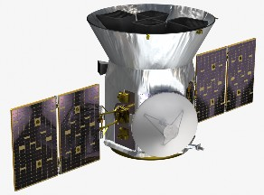
Figure 2.1: The TESS Observatory
Science Operations are performed in while in Fine Pointing, a highly stable ACS mode, in which the Spacecraft uses high precision quaternions produced by the Instrument cameras.
The Spacecraft Ka-Band system, consisting of a Ka-band transmitter, traveling tube wave amplifier, and 0.7m body-fixed High-Gain Antenna downlinks science data with 2W RF output power at 250 Msps (109 Mbps data rate) from the Instrument data handling unit to DSN ground stations during Low Altitude Housekeeping Operations, occurring near perigee. Approximately 4 hours are available for Ka-Band downlinks during these ground contacts, which are nominally 5 total hours in duration.
The Instrument cameras are mounted to the top deck via the Spacecraft Camera Accommo- dation Structure and thermally isolated. To help the Instrument cameras maintain desired operating temperatures, the Spacecraft Sunshade provides additional isolation from direct solar radiation.
The TESS instrument consists of four wide-field CCD cameras and a data handling unit (DHU). General instrument characteristics are given in Table 2.1.
Table 2.1: Instrument Characteristics
Characteristic | Value |
Number of cameras | 4 |
Camera FOV CCDs | 24◦ × 24◦ MIT/LL CCID-80 |
CCDs per Camera | 4 |
CCD Dimensions Pixel Size | 2048 × 2048 pixels in imaging array 15 µm square |
Pixel Depth | 100 µm |
Lens | Custom 146 mm, f/1.4 lens (MIT/LL Design) |
Bandpass | 600-1040 nm |
Camera Temperature | −85◦C (lens), −80◦C (CCDs) |
TESS Cameras
The TESS camera consists of a detector assembly, a lens assembly, and a lens hood (Figure 2.2). The detector assembly houses the focal plane electronics and the focal plane array. The focal plane array consist of four large-format backside-illuminated CCDs abutted to create a 63×63 mm detector.
Each camera has a field-of-view of 24◦ square. Figure 2.3 is a cross-section of the camera without the lens hood, showing the focal plane electronics, focal plane array, and lens assembly. The cameras are bolted onto a common plate that is attached to the spacecraft, such that their fields of view are lined up to form a rectangle measuring 24◦ × 96◦. Four elliptical holes in the plate allow shimless alignment of the four cameras at the desired angles.
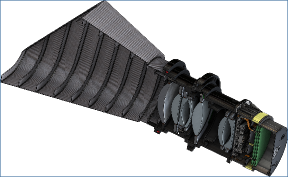
Figure 2.2: Schematic layout of a TESS camera. The camera consists of a) a detector assembly, which houses the focal plane electronics and the focal plane array, b) a lens assembly, and c) a lens hood.
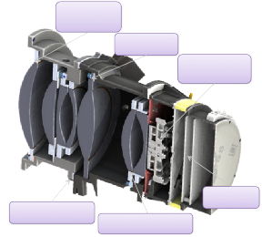
Aluminum lens bezels at all (7) loca3ons
Hard shims at each lens bezel
CCD Mosaic
(4) packaged CCD’s aAached to mosaic plate
Focal Plane Electronics
Aluminum lens barrel (splits at lens 4/5 loca3on)
RTV mounted lenses
(configura3on tailored to each lens)
Figure 2.3: Cross-section of TESS camera without lens hood. The focal plane electronics are housed just below the focal plane array and are thermally-isolated from the focal plane array to allow the CCDs to achieve low (-80◦C) temperatures on orbit.
Data Handling Unit
The Data Handling Unit (DHU) serves as the instrument flight computer. It is responsible the configuration and operational control of the flight cameras. The FPGAs in the DHU perform real-time image stacking, cosmic-ray mitigation, and subarray extraction. Data compression and storage for downlink occurs in the DHU.
TESS is in an elliptical, 2:1 lunar-synchronous orbit with a period of 13.7 days. The perigee and apogee of the orbit at the start of science operations were 17 RE and 59 RE. The TESS orbit is inclined from the ecliptic plane, thereby eliminating lengthy eclipses by the Earth
and Moon. The spacecraft orbit is operationally stable as a result of the Moon leading or lagging the spacecraft apogee by ∼ 90◦, averaging out the lunar perturbations.
−
The orbit remains above the Earths radiation belts, leading to a relatively low-radiation environment with a mission total ionizing dose of < 1 krad. The nearly constant thermal environment ensures that the CCDs will operate near 80◦ C, with temperature variations
<< 0.01◦ C/hr for 90% of the orbit.
The orbital period and semimajor axis are relatively constant, with long-term exchanges of eccentricity and inclination over a period of order 8-12 years (driven by a Kozai-like mechanism). There are also short-term oscillations with a period of six months caused by solar perturbations (see Fig. 2.4). The orbit is stable on the time scale of decades or more, and requires no propulsion for station-keeping.
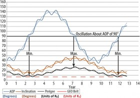
Figure 2.4: TESS is in a 2:1 lunar resonance orbit around the Earth. The orbit perigee, inclination, and period will vary on the timescale of years, but the overall orbit is very stable.
TESS observations are broken up into sectors, each lasting two orbits, or about 27 days. The 24◦ × 96◦ instrument FOV is oriented along a line of ecliptic longitude, with camera
4 centered on an ecliptic pole (Figure 2.5, at left). During observations, the cameras are oriented such that the line of ecliptic longitude is antisolar at the centerpoint of the sector. When one sector’s observations have been completed, the instrument FOV is shifted eastward by ∼ 27◦, naturally “pivoting” around the ecliptic pole, and the next sector’s observations can begin. As a result, the regions near the ecliptic poles are observed during every sector. The resulting sky coverage is shown in (Figure 2.5, right). The transition from one observation sector to the next always occurs at orbit perigee.
Because the spacecraft is in a lunar-synchronous orbit, there are 13 sectors per year. During Year 1 of the mission, the southern ecliptic hemisphere will be observed; in Year 2, the northern ecliptic hemisphere will be observed.
There is significant overlap between adjacent sectors, as is apparent in Figure 2.5. In particular, because camera 4 is centered on an ecliptic pole, most of the region within ∼ 12◦ of the ecliptic pole will be observed for an entire year.
Figure 2.6 shows the relative orientation of the CCDs and cameras with respect to the ecliptic for southern pointings (Year 1) and northern pointings (Year 2).
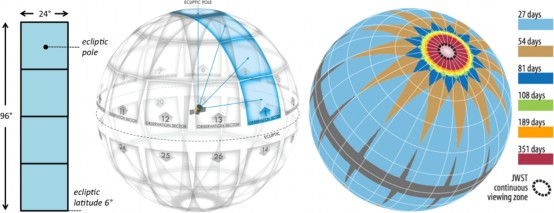
Figure 2.5: Left: The cameras are aligned along a line of ecliptic longitude, with camera 4 centered on the ecliptic pole. The bottom of camera 1 is 6◦ from the ecliptic. Center: Depiction of the orientation camera FOVs on the sky during the nominal mission, showing the overlap of FOVs near the ecliptic pole. Right: The overlap of FOVs leads to longer observation times near the ecliptic pole.
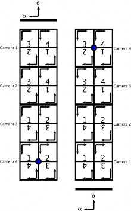
Figure 2.6: The orientation of the cameras and CCDs in equatorial coordinates for southern pointings (left) and northern pointing (right). The arrows in each CCD indicate the location of the readout of slice A. The circles in Camera 4 are at the ecliptic pole. The α and δ arrows indicate the directions of increasing ecliptic longitude and latitude.
Data Products
During nominal operations, the four CCD cameras are clocked continuously, with an integration time of two seconds. These two-second integrations are fed into the DHU, which sums them on the fly to create two basic data products: two-minute stacked subarrays and 30-minute FFIs. The two-minute subarrays are centered on stars with the potential for exoplanet discovery, asteroseismology targets, and calibration sources, while the FFIs can be examined for transiting planets around targets not specified in the two-minute data set, along with a wide variety of other astrophysical phenomena. These data products are compressed, stored on board, and downlinked to the ground at every perigee pass.
These data products, along with ancillary engineering data, are described in detail in the Science Data Products Description Document.
Two-minute “postage stamp” Data
The two-minute postage stamps are similar to the long- and short-cadence data collected by Kepler. During mission observation planning, targets for postage-stamp data are selected (cf. §9.4), and the pixels associated with each of these targets are identified. For the majority of targets, an 11 × 11 pixel box is sufficient to enclose the optimum aperture and background pixels; brighter stars will be given larger stamps. The list of target pixels is then uplinked to the DHU.
During science observations, the DHU uses data from 60 consecutive two-second integrations to create two-minute postage stamps from the uplinked target pixel list. Cosmic-ray mitigation (see §5.1) is applied to these stacks, which reduces the effective exposure time to 96 seconds.
The postage-stamp data are calibrated and formatted into target pixel FITS files in a format modeled on the Kepler format.
Full-Frame Images
The high data downlink capability allows FFIs to play a significant scientific role for TESS. During science operations, the DHU continuously uses data from 900 consecutive two-second images to create 30-minute FFIs for all cameras. Cosmic-ray mitigation is applied to the FFIs, which reduces the effective exposure time to 1440 seconds. As a result, a sector’s observations will produce a set of > 1200 contiguous 30-minute exposures of the sky (with a short interruption for data downlink in the middle).
Each of the four identical TESS lenses is an f/1.4 custom design consisting of seven optical elements, with an entrance pupil diameter of 10.5 cm. For ease of manufacture, all lens surfaces are spherical except for two mild aspheres. The seven elements are mounted in two separate aluminum lens barrels that are fastened and pinned together. All optical elements have antireflection coatings optimized for the TESS bandpass. The surface of one element
is coated with a long-pass filter to enforce the cutoff at 600 nm. The red limit at 1000 nm is set by the quantum-efficiency curve of the CCDs. A cross-section of the TESS lens is shown in Figure 3.1.
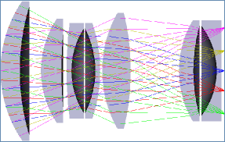
Figure 3.1: Cross-section of TESS lens, showing the optical paths for light at a range of incident angles. Because the first lens element is oversized, there is minimal geometric vignetting at large field angles.
Each lens forms a 24◦ × 24◦ unvignetted image on the four-CCD mosaic in its focal plane. The optical design was optimized for broad-band image quality across the wide field-of- view. The PSF is undersampled because, as Kepler results show, photometric precision is improved with a higher fraction of total power in the peak pixel (Gilliland et al., 2011).
The lens was designed for operation at −75◦C, but manufactured and assembled at room temperature. There is no focus mechanism in the TESS camera: the focus was set on the ground by the use of a precisely-machined shim that separates the lens from the detector assembly. The thickness of this shim was determined and set during pre-launch optical testing of the camera at flight temperatures. The criteria for setting the focus was the wavelength weighted and spatially weighted average of the brightest pixel flux fraction (BPFF), which is defined as the ratio of the source flux in the peak pixel compared to the total source flux.
Vignetting
✓
Because the first element of the TESS lens is oversized, there is no geometric vignetting over the full FOV of the camera. Figure 3.1 shows the light paths for rays at a range of incident angles. The first element of the lens is oversized, which reduces the geometric vignetting of the lens. The reduction of entrance pupil diameter with field angle is primarily due to geometric foreshortening and so falls off as cos(θ): this is shown in Figure 3.2.
A detailed calculation of the throughput of the system was performed. The system throughput calculation takes into account the spectral response of the anti-reflection coatings on each lens surface, the throughput of each lens element, the quantum efficiency of the CCD, and the anti-reflection coating on the CCD. The throughput is determined as a function of wavelength (spectral response) and field angle.
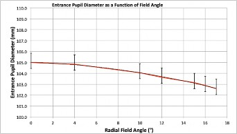
Figure 3.2: Entrance pupil diameter vs. field angle
Percent Transmission
Effective Area (cm2)
The on-axis system throughput vs wavelength and effective area vs wavelength are shown in Figure 3.3.
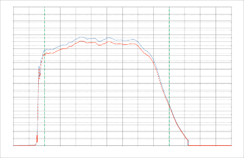
Wavelength (nm)
0.0
1200
1150
1100
1050
1000
900 950
850
800
750
700
650
600
550
500
0.0%
5.0
5.0%
10.0
15.0%
10.0%
15.0
20.0%
20.0
25.0%
25.0
30.0%
30.0
35.0%
35.0
40.0%
40.0
45.0%
45.0
50.0%
50.0
55.0%
55.0
65.0%
60.0%
60.0
70.0%
65.0
75.0%
70.0
80.0%
75.0
85.0%
80.0
90.0%
85.0
95.0%
90.0
100.0%
TESS System Transmission/Effective Area
Figure 3.3: Camera overall throughput (blue, left axis) and effective area (red, right axis) as a function of wavelength. The vertical lines indicate the nominal TESS passband of 600-1000 nm.
These analyses predict an effective area of 86.6 cm2 on axis and a drop of 4.5% in the furthest corner of the FOV (Figure 3.4).
Each camera is equipped with a lens hood to minimize the levels of stray light from the Earth or Moon striking the detectors. The lens hoods are roughly conical in shape, with flattened sides to allow for clearance. The lens hoods are truncated just below the level of the spacecraft sun shade to prevent direct illumination by sunlight. As a result, there are two types of lens hood: the lens hoods on cameras 1 and 4 are beveled at an angle of 36◦ (cf. Figure 2.2), while the lens hoods on cameras 2 and 3 are beveled at an angle of
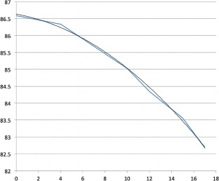
Effective Area (cm2)
Off-Axis Angle (°)
Figure 3.4: Predicted camera effective area vs field angle
12◦ (cf. Figure 3.5). Both types of lens hood are azimuthally asymmetric, with a short wall and a long wall, leading to an azimuthal dependence of the scattered light suppression performance.
The deep vanes in the lens hoods are designed to prevent single-bounce reflections of Earth/Moon light from the inside of the lens hood into the camera lens. The edges of the vanes are milled to ∼ 1 mil thickness to reduce the level of light reflected directly from them.
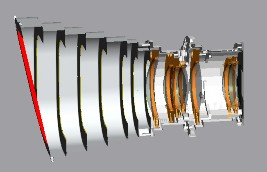 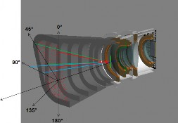
Figure 3.5: Left: Cross-section of camera fitted with 12◦ lens hood. Right: The level of scattered light suppression is a function of incident angle and azimuth.
The lens hood was designed to a requirement of a mean level of scattered light suppression of 107 over the entire FOV when the incident beam is > 37◦ from the optic axis of the camera. This level of suppression was intended to reduce the level of scattered light from the Earth at 40 RE to the sky background level. Figure 3.6 shows the theoretical performance of the lens hood design for both the long (36◦) and short (12◦) lens hoods. Because the lens hood shape is asymmetric around the optic axis, the suppression performance should be expected
to be different at different entrance azimuths (cf. Figure 3.5, right), and this is seen in the curves in Figure 3.6.
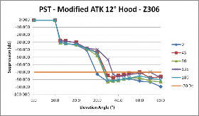 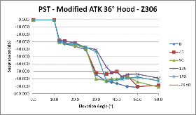
Figure 3.6: Predicted lens hood suppression performance as a function of off-axis angle of the light source for the 12◦ and 36◦ lens hoods. A suppression of -70 dB corresponds to a mean reduction of the scattered light per pixel of 107 over the FOV. The azimuthal dependence of scattering performance is also shown.
Theoretical modeling of the lens hood performance predicted that the scattered light suppression would not be uniform over the FOV. The mean suppression over the majority of the FOV would better than the requirement, but there would be small regions of lesser suppression. These regions would be seen as diffuse patches of light a few to several times the mean background level (see Figure 3.7). The location of these patches would depend on the azimuth of the source of the light and thus would move as the Earth or Moon changes its orientation with respect to the camera reference frame.
-30
-20
-10
0
10
20
Source: Az = 45° El = 45°
-30
-40
-50
-60
-70
-80
-90
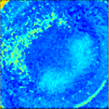
30
-30 -20 -10 0 10 20 30
-100
Figure 3.7: Predicted lens hood suppression performance over the FOV. The lens hood stray light suppression performance is not uniform over the entire FOV, but rather shows patches of lower suppression. The bright arc at lower right is due to a reflection from the edge of a vane.
The TESS detectors are CCID-80 CCDs, manufactured by MIT Lincoln Laboratory. The CCID-80 is a backside-illuminated, deep-depletion, frame-transfer CCD with three-phase clocks. The CCID-80 pixels measure 15µm square, and they are depleted to have a collection depth of close to 100µm. This deep depletion depth enhances the red sensitivity of the CCD, but also increases the volume sensitive to cosmic-ray interactions. Figure 4.1 shows the overall architecture of the CCID-80.
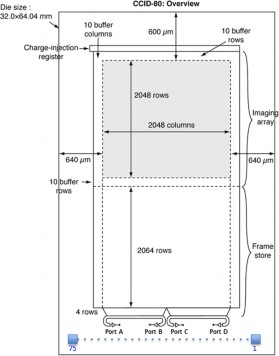
Figure 4.1: CCID-80 architecture
The imaging array for the CCID-80 is comprised of 2048(H)×2048(V) pixels. The active imaging array is surrounded by 10 extra rows and columns each on the left, right, top, and bottom sides to buffer the active imaging array from uneven fields due to the substrate bias. The left and right buffer columns are effectively invisible. The top buffer rows appear in the images, exposed to the sky. The aluminum that blocks light from the frame store area partially covers the bottom buffer rows, so these are only partially exposed. Charge accumulated in these rows is discarded during readout, but blooming and smear from bright objects in the uncovered portion may still appear in images.
There is a charge injection register above the the active imaging array. The charge injection register is disabled on TESS, but its presence is occasionally seen when charge from an extremely bright object blooms to the upper CCD edge. This charge can bloom horizontally
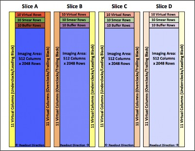
Figure 4.2: The CCID-80 is read out through four output nodes, labeled A-D. The readout of the serial register for each node begins with 11 virtual columns (yellow), followed by 512 imaging columns, ending with 11 virtual columns (orange). The output nodes are laid out in a manner such that the serial readout direction for nodes B and D is the opposite of that for nodes A and C.
in the charge injection register and appear in columns adjacent to a column with severe blooming.
The frame store region has dimensions 2048(H)×2068(V) pixels. It is divided into four slices (A, B, C, D), each 512(H)×2068(V). Each slice has its own serial register with its own output. Slices A and C are read out right to left (charge transfers right to left). Slices B and D are read out left to right. Each “serial” or “output” register has 11 extra pixels between the end of its frame store slice and the charge sense amplifier or output port.
The CCID-80 is equipped with high-conductivity “straps”, deposited near the gate structure at the bottom of the backside-illuminated CCDs, to allow for return of the current needed to transfer charge quickly from imaging to frame-store arrays. These straps are reflective to photons in the near IR and are visible in FFIs. The impact of the straps is discussed further in §6.6.1.
The readout of the CCD occurs in distinct steps. The number of rows and columns shifted in each step is critical to the understanding of the format and contents of the output.
Step 1: Parallel Transfer from Imaging to Frame Store CCD readout begins with a transfer of the charge in pixels in the imaging area into the frame-store area, row by row. The transfer of rows into the frame-store region occurs at a rate of 9.6 µs per row, for a total readout time of 19.95 ms. During this transfer, each pixel in each CCD column is
exposed to light imaged on every row in that column, which creates image smear along the column.
The readout of the imaging area consists of 2078 parallel transfers into the frame-store area. Because the frame-store area can only hold 2068 rows, the charge from the bottom ten (10) rows of the imaging area is clocked into the serial register and later flushed. Because the imaging area consists of only 2068 rows, the top 10 of the 2078 rows do not correspond to physical pixels. However, these pixels are exposed to starlight during the transfer into the frame-store area and therefore serve as a measurement of image smear.
Step 2: Readout of Frame Store The frame store is read out one row at a time: first the rows are shifted down, with the bottom row shifted into the serial register, then the serial register is read out through the four output amplifiers. This shift-and-readout process is done 2078 times. Because the frame-store area consists of only 2068 rows, the last 10 rows in the frame-store readout are only real during the frame store readout. These rows are virtual frame store rows and can be used to measure the dark current generated during the frame-store readout process.
Parallel Transfer into Serial Register The parallel transfer shifts the charge from the frame store into the serial register. Only the charge from the 2048 central columns is shifted; any charge in the buffer columns is shifted into a scupper and flows to ground. Parallel transfers occur at a clocking rate of (625/6) kHz, or 104.2 kHz; therefore, each parallel transfer requires 9.6 s.
Serial Register Readout The serial register is read out through four output amplifiers, A-D. Each amplifier sees 11 leading pixels, 512 active pixels, and 11 trailing pixels. The 11 leading pixels and 512 active pixels are characteristics of the CCD and cannot be changed. The number of trailing pixels is determined by the readout software and can have any non-negative value. The number of trailing black pixels was chosen to be 11 for symmetry. Because outputs B and D are on the right side of their parts of the serial register, the pixels are read out in the opposite physical order from those read out through outputs A and C. This flipping of the column order is accounted for in the generation of FITS images (§4.1.3). Figure 4.2 illustrates how the over- and underclock columns and extra rows relate to the image pixels. The readout of pixels from the serial register occurs at 625 kHz, or 1.6 µs/pixel.
The CCD pixels are read out as described in §4.1.2 and shown in Figure 4.2. In creating the FITS image for a single CCD, the imaging and virtual pixels are arranged in a manner that creates a monolithic array of imaging pixels in physical order, bracketed on both sides by overclocked pixel. This means that the order of the pixels in readouts B and D in the FITS image are reversed from the readout order of the pixels: the physically furthest-right pixel is the one read out first in slice B, whereas the physically furthest-left pixel is read out first in slice A.
As shown in Figure 4.3, the overclocked pixels for the four slices are oriented on either side of the imaging area. The order of the virtual columns is the same as that of the imaging region: i.e., the columns in the horizontal overclocked regions for outputs B and D are
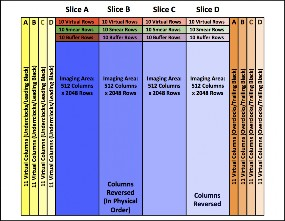
Figure 4.3: A CCD-level full-frame image is constructed by a) orienting the columns of readouts B and D in physical order and b) moving the underclocked columns to the left side of the image and the overclocked columns to the right of the image. The overclocked rows are arranged at the top of the image. The imaging area of the CCD is found in columns 45-2092 (counted starting from 1) and rows 1-2048.
reversed from their readout order, because the imaging columns for nodes B and D are reversed.
Because the pixel order of slices B and D is the opposite of the readout order, camera features that are dependent on readout direction can look different in different slices of the CCD. Undershoot is one example, as shown in Figure 4.4; other examples are discussed in
§6.
CCD QE
The quantum efficiency of the CCID-80 as a function of wavelength is shown in Figure 4.5. The overall QE is determined by the absorptive properties of the silicon and the performance of the antireflection coating placed on the CCD.
The TESS lens features a cut-on filter at ∼ 600 nm to bound the bandpass of the cameras at the blue end of the spectrum. However, there is no explicit cut-off filter at the red end of the spectrum: the bandpass of the TESS instrument is limited at the red end by the QE of the CCDs. As shown in Figure 4.5, the absorption length of red photons in silicon is a mild function of temperature, and this is reflected in the variation of QE with temperature shown in Figure 4.5. The stable thermal state of the spacecraft during nominal operations will minimize the impact on observations of QE variations with temperature.
The focal plane array (FPA) is constructed from four MIT/LL back-illuminated CCID-80 CCDs. The four CCDs are abutted, with a ∼1.5 mm gap between them (Figure 4.6, left). The four frame-store regions create an effective 4096x4096 pixel imaging array contained within a 62 × 62 mm focal plane with a fill factor of 95%. An aluminum light shield covers
 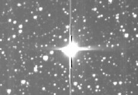
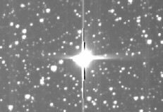
Figure 4.4: Because the pixels in slices A and C are read out in the opposite physical order from those in slices B and D, any features that depend on the readout direction, such as undershoot, will look different in different regions of the CCD. At left is a saturated star in slice B showing undershoot on the left side of the image; at right, in slice C, the undershoot is on the right side of the image.
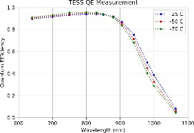
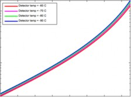
100 µm
Absorption Length (µm)
100
10
600 650 700 750 800 850 900 950
Wavelength (nm)
Figure 4.5: Left: The quantum efficiency of the CCID-80 CCD at three temperatures. Measurements made with a flight-like CCID-80 show the overall CCD QE and the thermal sensitivity of the QE at the red end of the spectrum. Right: The absorption length of silicon at four temperatures, showing the sensitivity to temperature at the red end of the spectrum.
the frame-store regions of the four CCDs, revealing only the imaging arrays of the FPA (Figure 4.6, right).
Each CCD and its associated amplifier circuitry is bonded to a SiC pedestal. The four pedestals are then mounted onto a monolithic SiC focal plane. The flatness of the FPA can be adjusted with shims under the pedestals (typical FPA flatness is shown in Figure 4.7. The SiC focal plane mounted to the detector housing via four titanium flexures. The SiC focal plane is thermally connected to the detector housing via two copper cold straps. The detector housing is thermally coupled to the lens and then to the lens hood, which serves as the primary radiator for the camera.
Each TESS camera has its own set of focal plane electronics (FPE), which consist of a driver board, a video board, and an interface board.
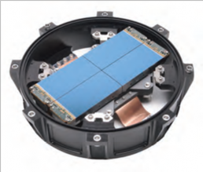 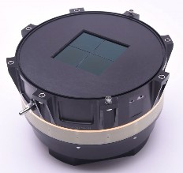
Figure 4.6: Left: The detector housing, shown without light shield, revealing the CCDs (blue), titanium mounting flexures, and the copper cold strap that sinks heat from the CCDs to the detector housing. At right, the full detector assembly, including the light shield over the CCDs and the G-10 spacer between the detector housing and the FPE housing.
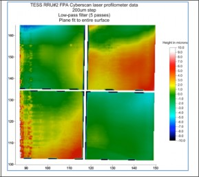
Figure 4.7: The focal plane array CCDs were aligned to be within ±10 µm of coplanar.
The driver board and interface board provide operating voltages and clocks to the four CCDs in the camera.
The video board amplifies and digitizes the outputs from the four CCDs. It also measures temperatures and controls the heaters that control the camera temperature.
All three boards collect analog measurements of voltages, currents, and temperatures (“housekeeping”). An ADC on the interface board digitizes these.
An FPGA on the interface board orchestrates the acquisition of digitized video and housekeeping. It commands the voltage and current regulators for operating voltages and temperatures. It relays digital data to and from the DHU.
Detailed documentation on the focal plane electronics may be found at https://github. com/TESScience/FPE/blob/FPE-7.0/Releases/FPE-7.0-RR10A/FPE.pdf.
−
The CCDs in the detector assembly are mounted in close proximity to the focal plane eletronics to reduce noise and crosstalk. The camera thermal design accommodates the need for the CCDs to be at temperatures near 80◦ while the focal plane electronics are closer to 0◦ by thermally isolating the two sections and feeding heat generated from the FPE out to the lens through the detector housing.
The lens hood serves as the heat sink for the camera, and the camera lens and CCDs are cooled by being in good thermal connection with the lens hood. The focal plane electronics are stood off from the backplate of the focal plane assembly, and a G-10 spacer thermally separates the back end of the detector assembly (housing the FPE) from the front end (housing the FPA). The resulting thermal profile for the camera is shown in Figure 4.8.
One by-product of the lens-hood-as-heat-sink design is a sensitivity to presence of the Earth in the FOV of a camera. Depending on the distance of TESS from the Earth when the Earth is in or near the FOV of a camera, the lens and CCD temperatures can rise ∼ 1 − 2◦.
The natural timescale for recovery from thermal excursions is ∼ 12 − 18 hours. This effect can be regularly seen as the camera temperatures change during and recover after perigee passes.
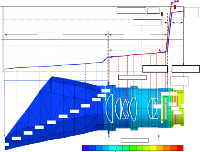
8.8W
0.51 W 0.8W
1
-78.3
-85.5
-86.1
-68.9 -9.0
-87.5
17
-88.7
-75.9 -75.4 -71.6
-78.6 -75.6 -73.5 -72.3
-69.1 24
-7.4
24
-89.6
-68.1
-91.1
-92.1
-75.9
-72.6
-92.9
-76.6
-73.7
-69.5
-70.6
-8.7
-93.6
-77.3
Barrel T = 6.0°C
Δ
-95.9
G-10 ring
ΔT = 59.9°C
Lenses ΔT = 7.0°C
Warm Zone
Cold Zone
Lens & CCD
Lens Barrel
Lens Hood
G-10 Spacer
Back
Cover
CCD
Offset Heater
FPE PCB
0°C
Temperature (°C)
-50°C
-100°C
Camera 1
(Average temperatures are shown)
-105°C -60°C -20°C 25°C
Figure 4.8: The predicted thermal profile of a TESS camera under flight conditions. Heat generated in the focal plane electronics is fed through the camera housing to the lens hood, which serves as a thermal radiator. The CCDs are isolated from the heat generated in the FPE housing by a G-10 spacer and thermally connected to the lens hood through the detector housing.
During science operations, the Data Handling Unit (DHU) performs real-time processing of data from the four cameras, converting CCD images into the data products required for ground post-processing. A primary data product is a collection of subarrays (nominally 11 × 11 pixels) centered on preselected target stars; another is full-frame images (FFIs).
The DHU consists of four functional modules: an Athena-3 Single Board Computer (SBC), a Re-Configurable Computer (RCC) with three Virtex-5 FPGAs and a custom Mezzanine Card, a Flash Memory Card (FMC) that serves as a Solid State Recorder (SSR) and a Power Supply. These modules are connected via a custom Compact PCI (cPCI) backplane. The SBC is responsible for commanding and communicating with the spacecraft master avionics unit, the RCC interfaces to the four cameras, performs high-speed data processing, and interfaces to the Ka-band transmitter, and the FMC holds 192 GB of mass data storage.
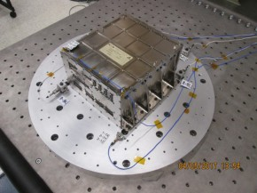
Figure 5.1: TESS Data Handling Unit
The CCDs produce a continuous stream of images with an exposure time of 2 sec. These data are received by the FPGAs on the IPC for processing. The DHU FPGAs are configured to process the incoming data streams independently and in parallel, using individual Science Processing Modules (SPMs). Each SPM can be configured to stack pixels in a supplied pixel mask to a certain depth and perform (or not perform) cosmic-ray mitigation (see §5.1, below).
In nominal operations, one SPM is configured to stack pixels 900 deep, with cosmic-ray mitigation, to be used to create FFIs. A second SPM is configured to stack selected pixels 60 deep, with cosmic-ray mitigation, to create two-minute cadence data. The Proton400k takes data of each type, compresses them, and stores them in the SSR prior to encapsulation as CCSDS packets for the Ka-band transmitter.
Cosmic-ray hits on the TESS CCDs have been assessed to be a significant source of excess noise unless mitigated. This is especially true for FFIs, where nearly half of the pixels in a 30-minute FFI will be affected by cosmic rays.
N
A mitigation mechanism for cosmic rays was developed and installed in the DHU FPGAs. During the image stacking process, pixel values are examined in groups of N : the highest and lowest values are discarded, and the sum is used in creating the stack. This has been shown in simulation and in flight to effectively remove cosmic rays from the stacked image: the cost is a reduction in the effective exposure time by N−2 and a concomitant increase in shot noise. The increase in noise was demonstrated through simulation to be of the order of 1-2% and much smaller than the noise levels in data with cosmic rays.
Pre-launch simulations calculated that the optimal value for N was 10. Testing done during Commissioning confirmed that this value was good for both two-minute cadence data and FFIs.
This procedure reduces the probability of contamination of a pixel by a factor of ≈ 100, but does not eliminate it. Outliers due to cosmic rays will still be present at a low level.
The following sections detail the features and artifacts of the TESS detector performance. Many of the effects described herein (§6.3 through §6.6, §6.8) are taken out by standard data processing: they are described here for those who would want to work with raw data.
The readout noise in the 64 CCD outputs ranges from 7 − 11 e−/pixel. The readout noise in outputs A and D is slightly higher than in B and C.
−
The dark currents in the 64 CCD outputs at flight temperatures ( 80◦C) are all <<
1 e−/s/pixel.
The bias level is a characteristic of each of the 64 CCD output stages. In general, the bias level is mildly sensitive to camera temperature. Proper image processing, which measures and subtracts the bias level from all pixels, mitigates such changes. Other sources of drift in the bias levels have been observed on orbit: these are discussed below.
Bias Drift
On longer time scales, the black level shows small systematic shifts, a few electrons in magnitude. This drift is due to factors such as component aging, radiation exposure, temperature drift, and power supply voltage drift.
Thermal Drift
The bias level is mildly sensitive to temperature changes in the CCDs and FPE, of the order of 3-5 ADU/◦C. Such shifts in bias level will occur primarily after data downlink (cf. §8.3.
Flicker Noise
Flicker noise is a random change in the bias level that is uncorrelated with temperature or other external causes. On short timescales, the variation is less than 1 ADU: see the left panel of Figure 6.1. On longer timescales, garden variety (1/f ) flicker noise diverges in amplitude as the log of the time scale, while Brownian noise (1/f 2) diverges as the square root of the time scale.
6889.6
Mean Black Level
6889.5
6889.4
6889.3
Flicker Noise
6657.4
6657.2
Mean Black Level
6657.0
6656.8
6656.6
Popcorn Noise
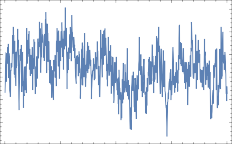
6889.2
6889.1
0
500
1000
Minutes
1500
2000
6656.4
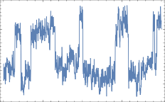
6656.2
6656.0
0
500
1000
Minutes
1500
2000
Figure 6.1: Examples of flicker noise (left panel) and popcorn noise (right panel) seen in the bias levels of flight CCDs.
Popcorn Noise
Some CCD outputs exhibit “popcorn” noise: sudden, small, shifts in black level. The new level typically persists for a period of minutes to hours and then shifts back. The right panel of Figure 6.1 shows an example.
“Black flutter” is a quasi-periodic variation in black level that is seen from time to time in two minute cadence data. Its period is approximately four minutes, so successive frames tend to alternate high and low. The four-minute periodicity is modulated by a sinusoid with a period of ∼ 45 minutes. It appears to affect CCD 2 in each camera more strongly than the others. Its amplitude is very sensitive to small changes in temperature. It may be crosstalk, but its source is unknown. It is included here because its mitigation is similar to other drift effects. Figure 6.2 shows an example.
If black flutter is seen in the flight data, its presence is noted in the Data Release Notes corresponding to those data.
Mitigation
In general, the bias drift mechanisms described above do not produce significant patterns in two or thirty minute images. Therefore, the mitigation for drift is to estimate a single offset for the black level for each CCD output for each frame.
6663.0
Mean Black Level
6662.5
6662.0
6661.5
6661.0
6660.5
Black Flutter
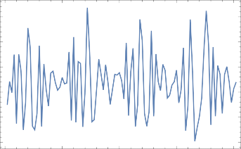
0 50 100 150 200
Minutes
∼
Figure 6.2: Measurements from flight data revealed that the mean bias level - - primarily in CCD 2 of each camera - - varied with an approximately four-minute period, enveloped by a 45 minute sinusoid.
Gain and linearity parameters were determined during ground calibration of the flight cameras. The values are tabulated in §A.3 and discussed in detail below.
Video Scale
The parameter videoScale represents the number of electrons a single digital unit denotes in the “small signal” regime (this is sometimes miscalled “gain”). Given the estimated number of electrons eˆ, the measured digital count d, and the calibration parameter videoScale r, eˆ = rd.
The videoScale parameter was determined empirically in ground calibration, using X-ray photons to deposit packets of known amounts of charge in the CCD. These are tabulated in §A.3.
Linearity
Linearity is described here in two ways: one used by the FPE design team, and one used by SPOC. The calibration products for the two methods were derived from the same calibration data and are, therefore, equivalent. Both methods are described to inform the user.
In the FPE design method, the parameters gainGainPerElectron and gainLossPerElectron
represent nonlinearity in the measurement. Given
eˆ = estimated number of electrons per image in the stack
e¯ = mean uncorrected electrons per image in the stack
g+ = calibration parameter gainGainPerElectron
g− = calibration parameter gainLossPerElectron
eˆ =
e¯
(1 + e¯g+)(1 − e¯g−)
These parameters were determined empirically in ground calibration. The dominant source of nonlinearity appears to be the charge sense transistor on the CCD chip. The drain-source voltage increases with increasing charge raising the transconductance. The source current decreases with increasing charge, reducing the transconductance. The resulting function is an S-shaped curve of voltage out versus voltage in.
The formula above represents the inverse of an S-shaped curve. The CCD operates in the nearly linear part of this curve. Figure 6.3 shows the deviation of the slope of this curve relative to the video scale for a sample slice. The points are measured, the curve is the fit to the formula above.
The method used by the SPOC to correct for the non-linearity is different from the method described above. The SPOC uses a polynomial fit to the data in Figure 6.3, one polynomial per readout channel. This polynomial provides a linearity correction for that channel as a function of the signal in ADU. The correction is applied to the signal, resulting in a “linearized ADU” value that can then be converted to photoelectrons by applying the videoScale parameter. Note that the polynomial is only valid for a single exposure, and that the SPOC only receives images made of many co-added exposures. The image value is divided by the number of co-adds to produce a mean signal per exposure, which is used to evaluate the polynomial and determine the linearity correction. The calibration data used by SPOC to correct for non-linearity is archived at MAST.
Relative Electrons/ADU
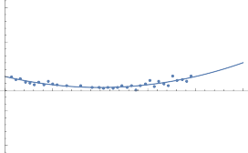
1.10
1.05
1.00
10 000 20 000 30 000 40 000 50 000
0.95
0.90
ADU
Figure 6.3: Deviation of system gain from the videoScale measured at low signal for an example CCD slice. The dots are measured values; the curve is a fit of the values to the equation above.
Differential Non-Linearity
Differential non-linearity is the variation in the height of the steps in the conversion of the analog video signal to a digital number. For TESS images, it is less than 1/8 of a digital
unit by design. This is difficult to measure even for dark exposures in the laboratory. Image stacking further attenuates this effect, so we do not expect it to have any significant effect on TESS data.
The 2D black files represent the fixed pattern that is visible in the black level for a sum of many exposures. They were acquired by reversing the CCD parallel clocks, forcing charge up to the charge injection register. The charge injection register was unclocked but left “open”, so charge could transit it to its ends and be collected. The serial registers and measurement chains were clocked as normal. Thus, power and crosstalk are the same as if there was no light on the CCD. These data were collected on orbit once the cameras had reached flight temperature.
The pattern in the black level was estimated using a truncated mean. For each pixel location, outliers that exceeded 3σ from the median value from N frames were exclued. The estimation of σ from the mean square deviation from the median uses only those points below the median. The 2D black files contain the means of the surviving measurements. This procedure prevents contamination by rare cosmic ray hits on the serial register.
Figure 6.10 shows an image of the pattern on a sample slice. The right panel of that figure shows the same pattern, quantitatively as a 3D surface.
The TESS CCDs show position-dependent quantum-efficiency variations over the FOV. The TESS CCDs also include QE variations that are wavelength-dependent. Flat-field images collected during pre-launch thermal-vacuum testing can be used during pixel calibration to account for these effects, but some wavelength-dependent effects cannot be completely accounted for.
The features of the TESS CCD flat field include
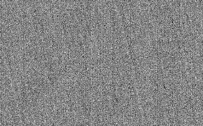
Figure 6.4: Image of a flat field of a TESS CCD taken at blue wavelengths. This figure reveals the “tree rings” that are created during the fabrication of the CCD wafers. Barely visible are the imprints of the “brick wall” pattern.
As discussed in §4.1.1, the CCID-80 is equipped with metal straps at the bottom of the depletion region to allow high current return during image-to-frame-store charge transfer. There are two types of metal straps, with different reflective properties. In addition to the charge-return metal straps, there are AlCu straps that are used to measure CCD temperature. These straps are reflective and thus become visible when exposed to near-IR light that can penetrate through the full silicon depletion region. The straps are plainly visible in FFIs with moderate amounts of red light (such as in scattered light regions, Figure 6.5).
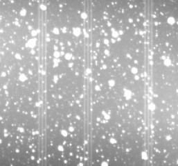
Figure 6.5: The straps are visible in FFIs with scattered Earthlight. The red photons from scattered Earthlight penetrate the CCD silicon and are reflected from the straps.
The straps are precisely oriented along columns, because they are created during the same lithography process that created the CCD gate structures. The straps are included in two different layers of the CCD lithography and have slightly different reflective properties. The locations (column numbers) and types of the straps are tabulated in the table in §A.4.
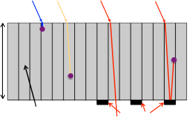
Depletion Region
Straps
The impact of the straps is shown in Figure 6.6. Photons striking the CCD surface from above penetrate into the silicon a distance that depends on the wavelength of the photon (cf. Figure 4.5). Short-wavelength photons will be absorbed in the upper layers of the Silicon, but above ∼800 nm, photons can pass through the entire silicon region and be reflected off the straps. This leads to an enhancement of the effective QE of the CCD in the region of the straps. The enhancement is different for different types of straps: at a wavelength of 1µm, the AlCu temperature straps have an enhanced QE of 4%, while the current-return metal straps are closer to 8 − 10%.
100 µm
1 pixel (15 µm)
Figure 6.6: Illustration of cross-section of CCD, showing the aspect ratio of the pixels. Photons enter the silicon from above and are refracted toward the normal. Once absorbed, they create a charge cloud (purple circles). Longer-wavelength photons penetrate deeper into the silicon. Those photons that can penetrate the entire thickness of the silicon can be reflected from a strap. The charge cloud is created in a different place, affecting the location and shape of the image.
The straps will impact, to varying degrees, the shape and brightness of stellar images.
The incident f/1.4 optical beam has a divergence that will create a spread of photons within the silicon. Without the straps, this divergence is a primary componenet to the PSF of the images; the reflections off the straps are also divergent and may create additional blur.
When a photon is absorbed in the CCD silicon, it creates a charge cloud which then grows through diffusion as it moves towards the gates. The reflected photons will be absorbed at a different depth, thus modifying the PSF.
The restriction of the straps to single CCD columns can lead to an asymmetry in the reflections, which will change the shape of the PSF.
The impact on red stars will be more pronounced than on blue stars: a blue star and a red star located on the edge of a strap will have different brightness variations with position. The magnitude of these variations has not been quantified.
Flat Field Blemishes
There are a countable number of blemishes on each CCD flat field, due to either defects in the CCDs or dust on the CCD when the flat field images were taken. Some of these dust particles may have been removed during camera assembly: the result is a dark spot on the
flat field where there would not be one in an image. In such cases, the calibrated image will show pixels with artificially-enhanced brightness levels.
A list of such CCD blemishes will be included in a future version of the Handbook.
Choice of Flat Field Wavelength
The flat fields were created by illuminating the flight focal plane arrays with light at wavelengths 780 ± 25 nm. The wavelength of 780 nm was chosen to be near the center of the TESS bandpass while minimizing the impact of straps.
The color variations in the sky background and field stars means a single flat field cannot remove the straps completely. As a result, precise photometry of stars landing on or near the straps may require special processing, regardless of the flat-field wavelength chosen.
Additional flat fields were created using light of different wavelengths. These flat fields will be made available through the archive at MAST at some future date.
A cursory glance at the image of a very saturated star (Figure 6.7) reveals several features:
The standard along-the-column charge bleed due to saturation
Diffuse image extensions in the column direction
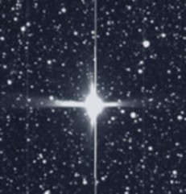
Diffuse image extensions in the row direction These effects, and others, are described below.
Figure 6.7: This image of a saturated star in an FFI shows three primary features: the bloom of charge due to saturation, the extended horizontal feature that is due to reflection of red light within the CCD silicon bulk, and a smaller vertical structure, also due to light reflection within the silicon bulk.
Blooming
For bright stars the amount of charge generated by photons can exceed the full well capacity of a pixel, and electrons begin to spill over into adjacent pixels along the same column (the charge barrier in the CCD is much lower along the columns), this phenomenon is called ”blooming”. The spilled charge forms a bright thin vertical line in the image. The length of the bloom, to first order, is the total charge in the pixel (in a two-second exposure) divided by the saturation level (generally ∼ 200, 000 e−).
The amount of charge deposited by a star of magnitude m into the peak pixel depends on the fraction of the total charge in the peak pixel: this value generally ranges from 0.2 to
0.4 in the TESS images. The TESS cameras create 15,000 e−/s for a star of m = 10: thus, a star of m = 5 will create 3 × 106 electrons in a two-second exposure. For a flux fraction of 0.3, the charge in the peak pixel is 9 × 105 e−, leading to a bloom length of 5 rows; similarly, a star of m = 2.5 will create a bloom of 50 rows.
A key feature of the CCID-80 CCDs used on TESS is their ability to conserve charge even from very saturated stars. Pre-launch ground tests showed that charge will be conserved for stars at least as bright as 4th magnitude. Measurements of charge conservation using flight data are in progress.
“Mustache”
Diffuse vertical and horizontal image extensions seen in some saturated images are due to reflections of long-wavelength light within the bulk silicon of the CCDs. Since the surface of silicon at that side is not flat, the reflections will go sideways, along the rows.
The channel-stop regions that serve to separate pixels in the horizontal (row) direction form vertical structures running along the surface: there, the Silicon - SiO2 interface is curved to form the channel-stop regions. When illuminated by light that travels perpendicular to the CCD surface, the side walls of channel stop regions partially reflect the light along the rows. If the star is near the center of the camera field of view, the reflected horizontal rays are very well aligned with rows. If the star location on the detector is far from the camera center, the incident light is not normal to the silicon surface. In this case, the reflections from the channel stops become tilted relative to the CCD rows, spreading into adjacent rows and creating a mustache-like shape. The direction of the tilt is opposite on the opposite sides of the field of view: the mustache curves away from the x-axis passing through the optic axis of the camera.
In addition to that, the mustache sidelobes become correspondingly asymmetrical when the star is shifted to the left or to the right from the center, which can be explained by the difference in reflection angles. As a result, the mustache lobe is longer in the direction away from the y-axis passing through the optic axis of the camera.
A similar phenomenon explains vertical lobes, which are slightly misaligned with the strictly vertical bloomed column, forming similar mustache in vertical direction, in addition to the cleanly vertical bloomed column. In this case deeply penetrating red component of incoming light is reflected from the edges of horizontally running structures formed by CCD polysilicon gates. As with the horizontal lobes, the deviation from completely vertical is caused by the fact that star light near the periphery of the field of view hits CCD surface from the direction that is not orthogonal to the surface.
A fuller explanation of the physics of the saturated images will be presented in Prigozhin (2019).
Charge Bleed Profile: Double Hump
In many cases, the distribution of charge along the column that has a bright star, causing blooming, has humps at both ends of the bloomed part of the image (Figure 6.8). That is contrary to na¨ıve expectation that signal should be strongest in the center, where the bright source of signal is located. The explanation for the humps comes when one traces the behavior of charge in the columns that are adjacent to the longest bloomed column. The humps appear to start at the locations where signal in the adjacent, less bloomed, columns begins to drop. Having large signal in the adjacent pixels seems to decrease the full well capacity of the central pixel. The electrons accumulated in the adjacent pixels repel the electrons in the central one, thus diminishing the total amount stored. Once the strongest bloomed column becomes surrounded by empty pixels, the amount of stored charge rises, causing the hump. This effect is discussed in Prigozhin (2019).
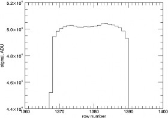
Figure 6.8: Vertical profile of a saturated star, showing the double-hump bleed profile. Charging effects within the CCD pixels at the core of a saturated image can result in charge being pushed into neighboring columns, resulting in an apparent deficit of charge along the primary bleed column.
Extreme Saturation
The presence of an extremely bright source in one slice of a CCD can create so much excess charge that it spills into the upper serial register. If there is sufficient excess charge, it will flow along the upper serial register and then be clocked through the imaging area during subsequent readouts.
This occurred most famously during the early part of Sector 1, when Mars was imaged into slice D of CCD 4 of camera 1 (Figure 6.9). It is unclear to what extent photometry can be performed on sources in this slice.
The signal measured in an individual pixel depends on the charge in the pixel, but it can also be affected by external sources. The cameras share a common power supply, and their power consumption varies with time, affecting clock voltages. Electromagnetic isolation between different parts of the circuitry is imperfect. Filters in the electronics that are
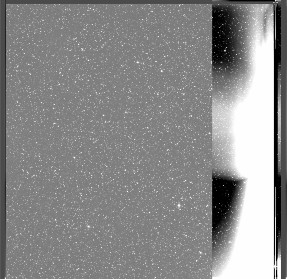
Figure 6.9: The presence of Mars in the corner of the FOV of Camera 1 caused extreme saturation for slice D of CCD 4. Note that the saturation effect is limited to slice D only.
intended to ameliorate these problems have memory: they reduce the effects in magnitude but spread them in time. Reduction of such crosstalk was a key requirement during the design of the focal plane electronics; however, it cannot be removed completely.
The following sections outline the various sources of crosstalk detected to date. Sources of fixed crosstalk are a function of the instrument and spacecraft electronics only, while illumination crosstalk is a function of light impinging on the CCDs.
Fixed crosstalk affects only the bias (black) level. The “2D black” files (§6.5) capture our knowledge of effects that do not vary with illumination. Different types of illumination crosstalk can affect either the bias level or the measured signal.
These effects happen in time order during CCD readout: because of the way the CCDs are clocked (cf. §4.1.2), they are only indirectly related to spatial location on the focal plane (recall that the standard FFI FITS representation reverses slices B and D relative to their time order).
The transfer of a row of pixels to the serial register produces a brief power surge and disrupts the regular rhythm of the pixel digitization process. This produces a disturbance of the black level at the start of a row that resembles a damped oscillation (“start of line ringing”, or SOLR; see Figure 6.10). The 2D black files include an estimate of this effect at operating temperature. There is a small temperature dependence to this effect, but it has not been calibrated, as a) the temperature of the TESS cameras is nearly constant over an orbit and
b) any residual SOLR is removed by subtracting the mean signal measured in the buffer rows from all imaging rows.
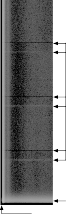
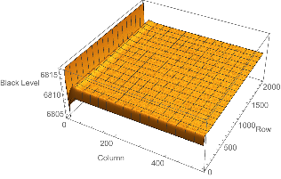
Inter camera crosstalk
Start of frame ringing Start of line ringing
Figure 6.10: Left: One slice of a 2D black image. Clocks were reversed during the collection of this image, so no charge reached the output. Start of line ringing, start of frame ringing, and inter-camera crosstalk are visible. Right: Quantitative representation of the 2D black image.
Start of Frame Ringing
The transfer of the image from the image area to the frame store produces a power surge and disrupts the regular rhythm of the pixel digitization process in a manner similar to SOLR (§6.8.1, Figure 6.10). As this is a much more sustained event (2078 rows times four slices) than the transfer producing start of line ringing, the settling time is longer. The 2D black files include an estimate of this effect.
Inter Camera Crosstalk
The science cameras are used as part of the attitude control system to achieve the high pointing stability required for good photometric precision. As described in §8.2.1, the cameras are not read out simultaneously, but rather staggered by 0.5 seconds. Because the cameras share a common power supply, the power surges during each frame transfer are sufficient to cause the voltage to sag. This produces a slight change in the black levels of the other cameras while their frame store areas are being read out. The frame transfer lasts 80 ms, so the voltage sag affects ∼ 80 rows (Figure 6.10). The 2D black files include an estimate of this effect.
Undershoot
The parameter undershoot represents short-term “memory” in the measurement of the CCD video. A pixel that follows a bright pixel in time is slightly depressed. Figure 6.11 shows an example. It’s always present, but it’s only visible when there’s a sharp drop in the image intensity along the row direction. It can be seen as a dark border to the left of the blooming spikes in the figure.
To correct for this, assemble a row from a CCD slice in time order, including dark pixels (“underclocks” and “overclocks”). Then, given di is corrected data for pixel i, Di−1 is uncorrected data for pixel i − 1, and u is the calibration parameter undershoot,
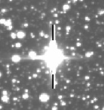
Figure 6.11: Undershoot is slight depression of the signal in a pixel that is read out after a bright pixel. It is always present, but only clearly visible near saturated stars.
di = Di + uDi−1
If the first pixel in the row defined as D1, assume that D0 is whatever value most accurately represents zero photoelectric charge. This correction will multiply the black level by ∼ 1+u, so we recommend applying it after adjusting the black level to approximately zero using the 2D black files.
The measured values of u are tabulated in §A.3.
“Tired Chain” Effect
Bright pixels cause a slight increase in the black level of subsequent pixels. This is distinct from and much smaller than the undershoot effect, which only affects one subsequent pixel: this affects ∼50,000 subsequent pixels. It is noticeable when many pixels in a region of an image are illuminated. It is called “tired chain” because it is thought to be a result of the signal measurement chains working harder to handle brighter pixels.
Figure 6.12 shows the effect. The top panel shows the charge read out in each row of 512 illuminated pixels, while the bottom panel shows the resulting change in video bias level. The decaying humps in the bottom panel follow bright rows in the top panel.
At present, there is no quantitative model for the tired-chain effect, but analyses continue to help develop one. Its impact is mitigated by the use of local backgrounding during photometry.
Intra Camera Crosstalk
Bright pixels can produce dim echoes in other slices from the same CCD. This is most clearly seen as a negative imprint in one part of the CCD that was caused by a bright source in another part of the CCD.
This effect has, to date, been seen only in CCD 3 of each camera. More specifically, bright sources in slice A will create negative images in slice C: the negative image is on the same
Sum of Illuminated Columns in Row
1.2 × 108
1.0 × 108
8.0 × 107
6.0 × 107
4.0 × 107
2.0 × 107
Mean of Last 10 Dark Columns
0
300
200
100
0
Tired Chain Effect
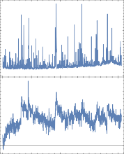
0 500 1000 1500 2000
Row
Figure 6.12: Top panel: sum of charge (in ADU) in each row of an FFI. The spikes are those rows with bright stars in them. Bottom panel: deviation of black level (as measured from overclock columns) as a function of row. The presence of bright sources in a row impacts the black level for subsequent tens of rows.
row and in a column 1024 higher than the bright source. This effect has not been seen in slices B and D, nor in CCDs 1, 2, and 4, nor do bright images in slice C create negative images in slice A.
Figure 6.13 is an illustration of this crosstalk. This effect has not yet been precisely calibrated, but the negative images appear to be ∼ 10−3 of the bright images.
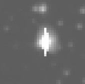 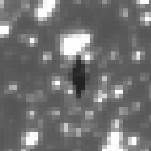
Figure 6.13: An example of intra-camera crosstalk: a bright (saturated) source in column 167 of CCD 3 (left) creates a negative image in column 1191 of CCD 3 (right).
The overall system throughput was calculated from measurements of the performance of AR coatings, lens element throughput, etc. as described in §3.1.2. These measurements predict a rate of ∼ 15, 000 e−/s for a star of TESS magnitude 10. Photometric measurements of stars of a range of magnitudes confirm that this prediction is correct to a few percent.
−
Flight camera focus was set during ground testing of the cameras before launch. During ground testing, it was discovered that the RTV used to mount the camera lens elements to the barrel would crystallize under the strain caused by transition to flight temperatures, and this crystallization would lead to stresses that would cause minor deformations of the lens elements and mounting. Extensive testing of the flight spare camera demonstrated that a) the deformation would take place over a period of days to weeks once the temperature of the lens dropped significantly below 75◦ and b) the camera focus would remain very stable if the temperature remained stable. Any small (few ◦C) variations in lens temperature would lead to small, almost unmeasureable shifts in focus, shifts that are reversible if the lens is returned to its baseline temperature.
During Commissioning, the temperature of the cameras was set to −85◦C, and the focus was monitored over the subsequent four weeks, as other Commissioning tasks were completed. The focus was monitored by measuring the brightest-pixel flux fraction (BPFF) over the FOVs of the cameras from 2-second FFIs collected during that period. The focus was seen to shift and then stabilize, as predicted.
Each TESS camera is equipped with a lens hood to reduce the levels of scattered light from the Earth and Moon. The lens hoods were designed to reduce the mean level of scattered light from the Earth to the mean sky background when the Earth is > 37◦ from the boresight of the camera. (While the Moon is also a source of scattered light, its angular size and albedo results in its brightness being 80× lower than that of the Earth). Refer to
§3.2 for an overview of the lens hood design and predicted performance.
Because of the wide field-of-view of the TESS cameras and physical restrictions imposed by the sun shade, the effect of the lens hood is not a hard cutoff across the entire field-of- view starting at 37◦. The mean level of scattered light across the field drops with increasing boresight angle, but there remain patches of scattered light at slightly elevated levels. These patches are restricted to a section of an annular region of the camera field-of-view and typically cover 10-15% of the total FOV. The location of the patch depends on the azimuth of the Earth around the camera boresight. The brightness of the patch varies with Earth azimuth and the distance of TESS from the Earth. The patch brightness is typically 2-6× the sky background for most of an orbit.
When the Earth is below the level of the sun shade, there is no scattered Earthshine within any camera.
When the Earth or Moon are closer than ∼40◦ from the camera boresight, complex scattered light structures and glints can arise. When the Earth or Moon is directly in the FOV of a camera, the camera is effectively useless.
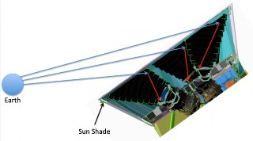 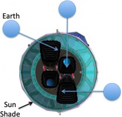
Figure 7.1: When the Earth is above the plane of the top of the sun shade, Earthlight can be scattered into the cameras’ FOVs. The scattering properties of cameras 2 and 3 are different from those of cameras 1 and 4 because of the different lens hood geometry. The amount and location of scattered light depends on the elevation of the Earth above the sun shade (left) and the azimuth of the Earth with respect to the camera array (right).
Scattered Light Geometry
Each camera is equipped with a lens hood, and the camera array is surrounded by a sun shade. Because the lens hoods also act as the primary heat sink for the camera, allowing the CCDs to be run at -80◦C, the lens hoods were truncated just at the level of the sun shade. As a result, the lens hoods are not azimuthally symmetric and have a short wall and a longer wall (Figure 7.1). This asymmetry leads to an azimuthal dependence in the levels of scattered light.
Earth Angle Greater than 37 Degrees from Boresight
At Earth angles greater than 37◦ from the camera boresight (and with the Earth above the plane of the lip of the sun shade), a patch of scattered Earthlight will become apparent. The location of the patch is a segment of an annulus that ranges in extent from 5 − 10◦ from the center of the FOV: the segment is generally ∼ 90◦ in angular extent. The patch has some structure, and the brightest part of the patch is typically 1 − 2◦ in extent. Figure
7.2 shows examples of batch brightness, location, and structure for three different azimuth angles.
The brightness of the patch will depend on the Earth elevation, azimuth, and distance. Calibration images at a range of elevation and azimuth angles were taken during the Commissioning phase of flight operations. The results of analyses of these images are shown in Figure 7.3. In this figure, the peak brightness of the scattered light patch is plotted as a function of angle from camera boresight for each of the four cameras. The brightness is
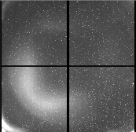 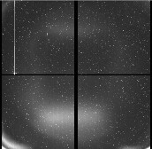 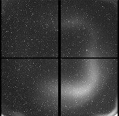
Figure 7.2: Three examples of FFIs with scattered light patches, taken with the Earth at different azimuths around the camera boresight. The patches are found within an annulus ranging from 5 − 10◦ from the center of the FOV and generally cover 10-15% of the FOV.
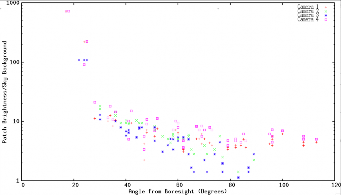
Figure 7.3: The measured peak brightness of the scattered light patch as a function of camera number and boresight angle. The peak brightness has been normalized to an Earth-TESS distance of 40 RE. The scatter in patch brightness for each camera at each boresight angle is due to the difference in suppression level at different azimuths.
normalized to a TESS-Earth distance of 40 RE: the patch brightness will be lower than the values in the plot for ∼20 days per sector.
Earth Angle Less than 37 Degrees from Boresight
As the Earth angle from a camera’s boresight drops below 37◦, the amount of scattered light increases dramatically. Figure 7.4 contains FFIs taken with the Earth just under 37◦ from the boresight, just outside the FOV of the camera, and in the FOV of the camera.
The impact of the Earth is quite pronounced when it is in the FOV of a camera: the temperature of the camera can rise by up to 1◦C in these cases. The level of scattered light is still very high as the Earth leaves the camera FOV. However, starting at off-axis angles of 25◦ − 30◦, the scattered light resumes its patchy characteristics.
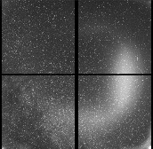 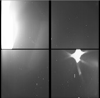
∼ ×
Figure 7.4: Three examples of FFIs with the Earth in or near the camera FOV. From left, the Earth is 34◦, 18◦, and 2◦ from the center of the FOV. The bright patch in the image at far left is 10 the sky background.
Figure 7.5: Left: Elevation (red), azimuth (green), and distance (purple) of the Earth (thick lines) and Moon (thin lines) over the course of orbits 13 and 14. The Earth was below the level of the sunshade for most of each orbit, ”rising” only in the last day or two of each orbit. Right: Angles of the Earth (thick lines) and Moon (thin lines) from the boresights of the four cameras over the course of Sector 3. Once the Earth rises above the sunshade, it is < 60◦ from the boresight of camera 1, so patchy scattered light should be expected.
Earth Angle Variations over an Orbit
The location and brightness of any scattered Earthlight is a function of a) the elevation of the Earth above the lip of the sun shade and b) the angular distance of the Earth from each camera’s boresight. These parameters vary over the course of an orbit or sector in predictable way. In the left-hand panel of Figure 7.5, the elevation and azimuth of the Earth and Moon are plotted, along with their distances from TESS, as a function time during Sector 3. When the Earth elevation is less than 0◦, no scattered Earthshine will be seen in any camera. Once the Earth rises above the sun shade, patchy Earthshine may be visible in the cameras’ FOVs. The location of the patch is a function of the Earth azimuth. The brightness of the patch in each camera is a function of the angle of the angle of the Earth from the camera boresight, plotted in the right-hand part of Figure 7.5; the brightness will, of course, vary as the square of the distance of the Earth from TESS.
The elevation, azimuth, and boresight angles can be calculated for any Sector of TESS observations and can provide insight into levels of scattered light.
×
Figure 7.6: Left: Full-frame image from Camera 1 during the ”dark” part of Sector 3. Center: Full-frame image from Camera 1 after the Earth has risen above the lip of the sun shade at the end of Sector 3. The peak level in the patch of scattered light is < 5 the sky background. Right: Full-frame image from CCD 4 stretched to enhance low-level diffuse brightness to reveal the corner glow.
Examples of full-frame images - - one with the Earth below the lip of the sun shade and one above - - are shown in Figure 7.6.
Glow in the Corners
One feature of the cameras is a low-level “glow” in the corners of the FOVs (Figure 7.6, right). This glow is present even when the Earth and Moon are below the level of the sunshade. The level of the glow is ∼ 1 − 2 times the sky background. The source of the glow appears to be stars outside of the FOV of the camera.
The TESS cameras are wide-field refractive systems. Every effort was made during camera design and fabrication to minimize optical artifacts from bright sources. Nevertheless, some optical artifacts from bright sources inside and outside the camera FOV remain. Theses optical artifacts may complicate the photometry of any sources “behind” the flare because
a) they frequently have sharp edges or structures, and b) they frequently move in the FOV if the source that created them moves with respect to the camera FOV.
Examples of optical artifacts are shown in Figure 7.7. Images from Sector 1, where Mars was in or near the corner of Camera 1, reveal flares created by internal reflections from the planet, as shown in the left panel. Optical flares from an unknown source are shown in the right-hand panel.
Difference image processing of FFIs reveals the intermittent presence of moving, illuminated objects. They can appear individually, as in Figure 7.8 (“fireflies”), or in groups, as in Figure 7.9 (“fireworks”). The objects are seen in multiple cameras, indicating that they are not artifacts within individual cameras. They typically appear as curved streaks, with a defocussed head and trailing into a more defined tail. The streaks appear as trains of

Figure 7.7: Point sources within and near a camera FOV can create ghost images. These images can have significant spatial structure. Some, like the ghost from Mars (at left), will move as the source moves with respect to the camera FOV, which may complicate the interpretation of light curves of sources near the ghost.
light pulses (§7.5.1). Fireflies have been seen about four times per orbit - - either single or multiple streaks - - for an occurrence rate of ∼0.6% of the frames.
These artifacts are likely due to particle ejecta resulting from micrometeorites hitting the spacecraft. The particles are initially seen as large blobs, indicating they are close to the cameras. The blobs get smaller as they move through the FOV, indicating they are moving away from the cameras. Solar radiation pressure applies a force on the particles, moving them towards the ecliptic: this is especially visible in Figure 7.9, where the trails get smaller and move towards a “vanishing point” to the left (ecliptic-ward) of camera 1. These trails are seen over a range of brightnesses corresponding to a range of ejecta sizes expected in a hypervelocity impact. A full analysis of the physics of fireflies is in progress and will appear in Villasen˜or (2019).
The dates, times, and cadence numbers for any detected events will be included in the Release Notes for that sector.
Figure 7.8: A single illuminated particle seen in cameras 2 and 3. Cameras 1-4 are arrayed left to right, with the anti-solar point just outside to the left of Camera 1.
The images of individual particle events appear pulsed: nine pulses, then a gap, then nine pulses again, etc. This effect is due to the cosmic-ray mitigation algorithm (see §5.1). The
Figure 7.9: A spray of ejecta seen during Orbit 9, likely caused by a micrometeor impact within the instrument bay.
explanation is relatively straightforward:
An instantaneous snapshot of a particle would like a circular diffuse blob
In a two-second exposure, the motion of the particle creates a diffuse oval
Because the image is diffuse, the ovular images from consecutive two-second exposures overlap to a certain degree, depending on the size of the size of the image blur
In regions where there is no image overlap, the pixels illuminated by the particle blob are removed by the cosmic-ray mitigation algorith
In regions where there is image overlap, a pixel appears bright in two consecutive two-second images. Cosmic-ray mitigation can only remove one of these images, so the resulting image has enhanced brightness. Cosmic-ray mitigation works in groups of ten images, so this effect is repeated nine times.
Cosmic-ray mitigation works in groups of ten images, so every ten images, overlapped images will have one image in one set of ten images and another in the next set of ten images. In this case, both images are removed by cosmic-ray mitigation, creating a gap.
∼
The pixel response function (PRF) gives the 2D distribution of light from a point source in the focal plane convolved with the pixel response non-uniformity of the detector and the jitter profile of the spacecraft over a 2 minute exposure. The PRF changes substantially over each camera’s field of view: near the boresights, it is more compact (and even slightly undersampled within 1◦), and spreads out into chevrons at large field angles (approximately greater than 6◦). The PRF is also slightly chromatic and varies with temperature.
The SPOC pipeline uses a model of the PRF to monitor the locations of the brightest, unsaturated stars on each CCD to reconstruct pointing and capture distortion due to focus changes. The PRF is also used to separate target star positions from background objects when calculating optimal apertures.
During commissioning, the PRF was characterized with micro-dithered observations of bright, relatively isolated stars near predefined grid points across each CCD. The grid points
were spaced by ∼ 2.4◦ to produces a 5x5 grid per CCD—prelaunch investigations based on models of the cameras showed that interpolation errors in the PRF over this range are of order ∼1%. The micro-dithers consisted of ∼1.9 arcsecond pointing offsets that traced out an 11x11 subpixel grid, in order to measure the change in local pixel response as a function of small changes in pointing.
Based on these observations, a model of the PRF at each grid point was constructed by fitting a two-dimensional polynomial to the average stellar profiles, the coefficients of which depend on the location of the grid point in the focal plane and the sub-pixel location of the PRF centroid. Bilinear interpolation is used to estimate the PRF at locations between the predefined grid points. The final fit is accurate to about 10%, based on the differences between the enclosed volume of the observed PRF and the model. A super-sampled version of the PRF at each gridpoint was also calculated form the models, and exported as a .mat file to MAST.
The dependence of the PRF on the jitter profile means that the accuracy of the PRF is only valid during periods of ”good pointing” in Sectors 1–3. In Sector 4, a different fine pointing ACS method was implemented, which changes the jitter profile and the corresponding PRF. The pointing performance is substantially improved in the new ACS implementation, and plans are in place to remeasure the PRF based on this performance before Sector 6 (mid December of 2018).
Data compression is done in the DHU before downlink. It is done in three steps: requantization, differencing, and Huffman encoding. The compression procedure is done on a per-pixel basis, and the procedure is the same for both two-minute and FFI data.
Requantization maps the raw data onto a 16-bit word, assigning each possible raw value a value in a 16-bit word. This is not a lossless procedure, but the mapping was calculated in a way that the additional noise is less than one quarter of the shot noise at that level.
The requantized pixel data are subtracted from the values in a reference image. For stable sky conditions, the difference images should be zero plus/minus shot noise. For each data type, a reference image is defined every N cadences: the subsequent N − 1 images are subtracted from the reference image. The value of N is 24 for two-minute cadences and 30 for FFIs.
The reference frames and differenced frames are then Huffman encoded for downlink. On the ground, this process is reversed to recreate the raw data.
Using this method, compression levels of 4 bits/pixel are routinely achieved. During periods of quickly-changing background levels due to stray light from the Earth or moon, compression levels climb because the difference image is no longer zero-centered. Regions with black flutter (§6.3.5) also suffer from higher compression levels.
The FOV of each camera is nominally 24◦ × 24◦. The gaps between the CCDs, both vertically and horizontally, subtend 36’ to 41’. The gaps between cameras are < 10’ along
the centerline of the cameras. The distance between adjacent cameras in the corners of the FOVs is generally ∼ 10’ larger, due to the distortion of the lenses.
The stability of the TESS spacecraft is critical in reducing the systematic errors that will impact sensitivity to small planets around bright stars.
Fine attitude control on TESS involves measurements of spacecraft attitude using the science cameras. For each sector, 200 bright, isolated stars are chosen per camera to serve as ”guide stars”. Given the planned pointing orientation of the spacecraft fro the sector, the CCD coordinates of these guide stars are calculated using the POC focal plane model (§9.3) and uplinked to the ADHU. During observations, the coordinates of these stars are calculated by the DHU in real time: the difference between the measured and predicted guide star locations are converted into a delta quaternion and forwarded to the spacecraft attitude control system (ACS).
The readouts of the four cameras are staggered by 0.5 seconds, so delta quaternions are generated by the DHU at a rate of 2 Hz. These are fed into the Kalman filter in the spacecraft ACS.
History and Current State of Spacecraft ACS
The ACS algorithm implemented at launch involved the use by the spacecraft ACS of delta quaternions from all four cameras and the measurement of the speeds of the momentum wheels. During Commissioning, it was noticed that the momentum wheel speed measurements were noisier than expected at higher wheel speeds. Initial mitigation methods included resetting momentum wheel speed with a “momentum dump” every 2.5 days: these are quite evident in the science data, both target pixels and FFIs.
A modified ACS algorithm that does not use momentum wheel speed measurements was developed, and initial testing was performed during Orbit 13 (Sector 3). The jitter performance was seen to be significantly better. Momentum dumps every 3.0 days are used to keep the momentum wheels in a quieter range; analyses are in progress to help assess whether the time between momentum dumps can be increased.
Stability Performance
The details of spacecraft stability in each Sector are noted in the Data Release Notes. The spacecraft stability is recorded in the engineering quaternion files accompanying each data release: these provide the difference between desired and measured pointing in quaternion form.
Figure 8.1: Temperatures of the four camera lenses over the course of two orbits. During science operations, the temperatures are very stable. The spacecraft orientation is changed during data downlink, causing a temperature offset.
During a momentum dump, the angular momentum is removed from the reaction wheels by firing the thrusters while the ACS keeps the spacecraft pointing stable. This process requires dropping out of Fine Pointing ACS mode into Coarse Pointing Inertial ACS mode for ∼5 minutes, then back to Fine Pointing mode (cf. §9.1.3). During those five minutes, and for ∼5-10 minutes thereafter, the spacecraft stability will be reduced.
Camera 2 Periodic Motion
Due to the influence of a nearby spacecraft heater, the pointing of camera 2 varies by ∼ 0.05 arc-seconds with a period of one hour.
Lens barrel temperatures are very stable over most of the orbit. Figure 8.1 shows the temperatures of the four camera lenses over the course of two orbits. During most of the orbit, the temperature drift rates is <0.02◦/day. At perigee, the spacecraft reorientation required for data downlink changes the camera temperatures by 1−2◦: camera temperatures return to nominal within 1.5-2 days after return to science orientation.
Figure 8.2 shows the photometric precision measured using the targets selected in Orbit 9.
TESS observation sectors consist of two consecutive orbits, each with a duration of just under two weeks. An orbit is broken up into two phases: High-Altitude Science Operations (HASO) and Low-Altitude Housekeeping Operations (LAHO). All science observations occur during HASO, all science data downlinks occur during LAHO.
Figure 8.2: 1-hour Combined Differential Photometric Precision (CDPP). The red points are the RMS CDPP measurements for the 15,889 light curves from Sector 1 plotted as a function of TESS magnitude. The blue x’s are the uncertainties, scaled to 1-hour timescale. The purple curve is a moving 10th percentile of the RMS CDPP measurements, and the gold curve is a moving median of the 1-hr uncertainties.
Ground Contacts
The spacecraft is in contact with the ground multiple times per orbit. High-data-rate downlinks of the accumulated science data from the previous orbit occur during LAHO. Three low-data-rate contacts during HASO are used for ranging to the spacecraft and to check observatory and instrument health and operation. The contact schedule is maintained on a google calendar available at http://tess.mit.edu/observations.
Operation Planning
During nominal operations, command sets relevant to a sector are uplinked two weeks before the sector begins. Operations planning begins two weeks before that. The steps in operations planning are:
Determine spacecraft pointing for the sector
Generate guide star tables and test on engineering DHU
Generate target star tables and test on engineering DHU
Plan momentum dumps
Once generated, reviewed, and tested, the guide star and target star tables are forwarded to the MOC at NGIS for uplink.
The steps to start science data collection are:
Upload guide star tables
Upload target star tables
At the appropriate time, slew the spacecraft to the pointing for the current orbit. The spacecraft will be in Coarse Pointing Inertial ACS mode, which means the spacecraft stability is controlled by the star trackers only. The stability is ∼1 arc-minute.
Configure the DHU to begin data collection appropriate for the current orbit. This is often referred to as “setting the orbit ID”. The instrument will begin taking data.
Configure the ACS to Fine Pointing mode. The spacecraft will begin receiving and using delta-quaternion information from the cameras to control spacecraft pointing. The star trackers are ignored in Fine Pointing mode.
Any interruptions to Fine Pointing mode (e.g. momentum dumps (§8.2.4)) will drop the ACS to Coarse Pointing Inertial mode, and the jitter performance will worsen to ∼1 arc- minute.
Data Downlink
Data downlink occurs during LAHO. There are two LAHO contacts at each perigee, separated by 18-24 hours. Full data downlink occurs during the first contact; the second is used as a backup in case there are problems with the first contact. No science data are collected between the LAHO contacts in a given perigee.
In order to downlink data, the spacecraft is reoriented to point the Ka-band transmitter at the Earth. The data downlink takes 3-4 hours; between the two LAHO contacts, the spacecraft is oriented with its aft end toward the Sun. This reorientation and downlink period causes a perturbation to the temperatures of the four cameras, as discussed in
§8.3. Starting with Sector 6, the spacecraft will be in nominal science orientation between the LAHO contacts, which will significantly reduce the amplitude of the temperature perturbation.
As described in §5.1, the impact of cosmic rays is mitigated on board by removing the highest and lowest values in sets of ten measurements of every pixel’s value. The immediate result is a reduction of the effective exposure time to 96 seconds for two-minute cadence data and 1440 seconds for FFIs.
Impact on Photometric Precision
Because this trimming process effectively results in only 80% of the exposures being used, one might expect that the variance of stacked pixel values would increase by a factor 1/0.8 = 1.25, corresponding to a standard deviation increase of 1.12, relative to all exposures being summed. Such increase would be inevitable if the trimming process were rejecting random exposures, but by rejecting more carefully selected exposures (the highest and the lowest) the actual noise penalty is less. Numerical simulations applying this trimmed sum method to 1-dimensional time series indicate the actual increase in statistical noise is only 1.06× the variance or 1.03× the standard deviation. To estimate the purely statistical noise seen by a pixel, multiply the estimated standard error from readout and shot noise, assuming no mitigation, by 1.03.
In addition to the purely statistical noise, this cosmic ray mitigation algorithm can introduce additional systematic noise to photometry, by coupling to spacecraft jitter. An individual pixel’s time series can see sudden increases or decreases in flux due to a bright star jittering onto or off the pixel. Such excursions can be removed as a high or low value by this truncated sum; if the rejected flux is not perfectly balanced across a photometric aperture, a star may show additional systematic noise. Such noise likely scales with the amplitude of the intra-cadence jitter (how much stars move within the duration of a single 2-minute or 30-minute cadence). Metrics that encompass the intra-cadence jitter, either estimated from the apparent width of point sources or from spacecraft quaternion time series, may be useful ingredients for methods aiming to model or correct for this noise effect.
Simulations of the cosmic-ray mitigation procedure and results can be found in
https://github.com/zkbt/tess-zap.
Other Effects of Cosmic-Ray Mitigation
Because the cosmic-ray mitigation method removes high outliers, there may be an impact on sources that have a short risetime. This effect is under study.
Cosmic-ray mitigation may also impact the photometry of slowly-moving objects, such as comets or asteroids. Refer to §7.5 for a review of the impact of cosmic-ray mitigation on the brightness of particles moving several pixels per second. The impact on more slowly moving objects is under study.
There are two different, but equivalent methods of mapping celestial coordinates onto CCDs. One was developed at the POC for mission planning; the other is a by-product of PRF measurements and is used in SPOC calibrations. Both methods are described here; only the SPOC calibration is delivered to MAST.
POC Mapping
In order to accurately assign observing targets to detector pixel coordinates, an analytical parametric focal plane geometry model was determined that converts target right ascension (RA) and declination (Dec) coordinates into predicted locations onto the detector pixel
coordinates. The conversion model parameters are chosen by fitting the model to flux weighted pixel positions for 2000 bright ( 8 < Tmag < 9), relatively isolated stars per camera. The model parameters consist of three Euler angles for each camera in order to convert the spacecraft boresight (+Z axis) to a frame centered on each camera axis, an azimuthally-symmetric model that contains even powers of the radial angle position up to exponent order 8, the camera focal length, and parameters that specify the position and rotation of each CCD in the focal plane. The focal plane geometry model parameters are determined after taking into account the apparent stellar positions due to velocity aberration from spacecraft motion around the solar system barycenter. RMS residuals between pointing model and flux weighted centroid positions are 1.3 +/- 0.06 arcsec (0.06
+/- 0.03 pixels): see Figure 9.1.
An open source python implementation of the focal plane geometry model is available for download.1 The python implementation currently provides predicted pixel coordinate positions for targets appearing in the first year (Sector 1-13) of spacecraft operations. In order to predict target pixel positions, the tool depends upon spacecraft pointings 2 that are subject to change. The tool does not yet incorporate the effects of velocity aberration and the predicted locations differ from observations by 1–2 pixels. As an alternative, when the data becomes publicly available, world coordinate system (WCS) parameters are available in the SPOC-calibrated FFI FITS headers and target pixel files. The WCSs are accurate to about 0.1 pixels or better, in most cases.
SPOC Mapping (FPG)
The Focal Plane Geometry (FPG) model used by the TESS SPOC uses a set of empirically determined 2-D polynomials to perform its transformations. The transformation takes as inputs the location of a point of interest in the sky relative to the instrument boresight axis (here referred to as instrument latitude, Lat, and instrument longitude, Long); each CCD has a polynomial that takes instrument latitude and longitude to row, and a second polynomial that takes instrument latitude and longitude to column (row = Row(Lat, Long); column = Column(Lat, Long)). A second set of two-dimensional polynomials performs the reverse transformation from row and column to instrument latitude and longitude.
Targets observed in two-minute subarrays are selected based on their scientific value as determined by the mission stakeholders:
All bright stars (Tmag < 6)
The TSO identifies stars suitable for exoplanet discovery, with a particular emphasis on the mission’s Level 1 requirements (measuring the masses of 50 planets with radius less than 4RE). The full procedure for identifying and prioritizing these targets is described by Stassun et al. (2018).
The GI office provides a list of targets, based on reviewed and accepted proposals submitted by the wider astrophysics community.
1http://github.com/christopherburke/tess-point
2 https://tess.mit.edu/observations/
±
Figure 9.1: The positions of selected star are mapped to their celestial coordinates, as described in the text. This plot shows the residual from the fit for Camera 1: the RMS residual is 0.06 0.03 pixels.
The TASC identifies stars ideal for asteroseismology analysis using 2-minute TESS data.
The PI can allocate targets as part of a Director’s Discretionary Time (DDT) program.
Each group prepares a candidate target list (CTL), which contains the target’s TIC ID, a priority ranging between 0 and 1, and any labels or keywords that can be propagated to the data analysis (see below). The priorities serve as a metric of the desirability of each target according to the specific working group, with larger numbers indicating higher priority. Each CTL is allocated a number of slots for which they may select unique targets. Table
lists the set of CTLs that go into the final observed target list, as well as the origin of each CTL, its contents, and the number of associated slots.
A special case is the list of Photometer Performance Assessment (PPA) stars, which are used to track the health of the detectors and define WCS solutions. The PPA stars are required to be bright but unsaturated, isolated, and distributed over each CCD as uniformly as possible.
For each sector, the POC produces the final list of observed targets by identifying which targets from the CTLs are observable and sequentially adding the prioritized targets until the maximum number of targets that can be downloaded and processed per sector is reached.
Table 9.1: Categories of Candidate Target Lists
Order Name Origin Content N Slots
ppa POC Engineering (PPA) targets 1,920
bright TSO Stars with magnitude < 6.
exo TSO Stars suitable for exoplanet discovery. ∼15,000
astero TASC Stars suitable for asteroseismology observations. 750
GI GI Office Targets selected through external proposals. 1,500
DDT PI/TSO Targets selected through the 1,500
Director’s Discretionary Time program.

No more than 20,000 targets may be selected per sector, with a maximum of 2,000 targets per CCD.3
Targets are selected from the CTLs in the order shown in Table 9.1: ppa, bright, exo, astero, GI, DDT. During the selection process, the number of targets allocated to a CTL is limited to the number shown in Table 9.1. Once the number of targets allocated to a CTL has been selected, the remaining targets from that CTL are ignored, and selection from the next CTL begins. If a target appears in multiple CTLs, it is only counted against the total allotment in the first CTL in which it was encountered. For example, a GI target that was selected by the exo CTL is not counted against the 1,500 slots allotted to the GI CTL, nor would an exo target that was selected as a PPA star be counted against the 15,000 slots for the exo CTL. All such cases are carefully logged and saved by the POC for future reference. In cases where different CTLs request different pixels (e.g., for larger apertures), the superset of pixels is selected for download.
For each CTL, the POC adds targets with the following procedure:
The total number of targets per sector is tracked. Once the maximum number of targets is reached, the target selection loop exits, logs of the targets and their CTL(s) of origin are written to disk, and files are produced for tracking the target list/pixel table and commanding the spacecraft. If there are still slots remaining after searching all six CTLs, the exo CTL is used to fill any remaining slots.
The pixels associated with each selected target must contain the optimal aperture and enough background pixels to robustly estimate the sky level. For the majority of targets, an 11×11 pixel box is sufficient. For saturated stars, additional rows are collected to capture
3In sectors 1-3, 16 000 targets were selected. In sector 4, the limit was increased to 20,000.
Table 9.2: Target Selection Tests

Test Action if Yes
Are any pixels associated with this target outside of the science imaging region?
Would adding the target exceed the total number of targets for this CCD?
Would adding the target exceed the total number of targets for this CTL?
Would adding the target exceed the total number of targets for this sector?
Go to next target.
Ignore this CCD, go to next target.
Go to next CTL.
Exit and complete target selection.
the full bleed trails. Each CTL may also request a different aperture for any target using keyword labels (in practice, some GI programs have requested larger 25x25 pixel apertures). Apart from extra rows collected for bleed trails, all pixels associated with a target must land in the science imaging region of the target CCD. If a target is too close to the edge (generally within 5 pixels) it is not added to the final target list and the loop continues to the next-highest priority target.
After completing target selection, the final target list is checked against each CTL to find the total number of targets observed per CTL. This number is always larger than the allocated slots per CTL, since targets that are listed at low priority in one CTL are often selected at high priority by another CTL.
Once downlinked to the DSN, instrument science and engineering data are reformatted and forwarded to the SPOC. There, the raw pixels are calibrated and formatted into FFIs and target pixel files. The data processing pipeline (Jenkins et al., 2016) used on TESS is based on and very similar to that of Kepler’s Science Operations Center (Jenkins, 2017). The pixel calibration part of the data processing pipeline (CAL) is summarized below.
Pixel Calibration

Every data release includes target pixel files, raw FFIs, and calibrated FFIs. Raw data (RAW CNTS column in the target pixel files and the raw FFIs) have units of ADU. The mean black levels in each output channel are adjusted for the compression algorithm, but otherwise directly reflect the values of the coadded images. Calibrated data (FLUX column in the target pixel files and the calibrated FFIs) have units of electrons per second, and are produced by the SPOC pipeline module Calibration (CAL). CAL performs the following corrections:
2-D black correction: Removes static fixed-pattern noise. The correction is based on the 2-D black model provided by the POC (and available at MAST), measured from reverse-clocked images taken on-orbit during commissioning.
1-D black correction: Removes the time-variable bias level in each output channel. The correction is calculated by fitting a polynomial as a function of row number to the mean value of the overclock columns. The order of the polynomial is selected with the Akaike Information Criterion (AIC).
Linearity correction: corrects for the non-linearity in the response of the electronics to different voltage levels off the CCD. See §6.4.
Gain correction: applies the gain to the non-linearity-corrected pixel values to convert digital counts (ADUs) to photoelectrons per second (e− s−1). See §6.4.
Smear correction: Removes flux along columns caused by shutterless readout. The correction is calculated from the robust mean across virtual rows 2059–2068.
Flat-field: Removes pixel response non-uniformity. The correction is based on laboratory measurements of the the PRNU at 780 nm—features of the flat field are described in §6.6.
The FLUX column in the target pixel files are also background-subtracted based on background pixels identified by the PA (Photometric Analysis) pipeline module .
Additional Calibration Effects
Other issues to consider during data processing:
Bright source bleed near edge of the CCD: a bright source near the bottom of the CCD can bleed into the frame store, which will add charge to the previous cadence as it is read out. In these cases, bleed trails will be evident in the virtual and smear rows of the CCD frame. Because there are 10 buffer rows below the CCD imaging region, some bright sources can still affect the lower frame store even if they are not directly imaged. This appears to be the case for Canopus (Alpha Carinae) in Sector 1: see the diffuse glow at the bottom of Cam 4, CCD4, output channel C, and the bleed trails in the top virtual/smear rows of columns 1267 through 1270.
If the source is near the top of the CCD, the charge can bleed into the charge injection region and bloom horizontally (along columns); however, this effect is not present in Sector 1.
Charge traps can change the distribution of charge along a column during readout, and generally move charge from stars near the top of the frame into the smear rows. A charge trap in the frame store will also deposit charge in the virtual rows. These cases can be identified by a weak gradient in rows 2059 through 2068 (or 2078 for traps in the frame store). The charge traps appear to be stable in time, and a full list of affected columns will be found in a future revision of the Instrument Handbook.
The precision and accuracy of the timestamps in the light curve, target pixel, and FFI files are determined by the precision and knowledge of the drift in the on-board 1 Hz spacecraft
clock. The SC clock frequency drifts due to thermal and aging effects. The SC clock is correlated with UTC by the MOC every contact (∼3 days). On the ground, the POC converts the spacecraft clock counts into TESS Julian Day (TJD = JD−2,457,000.0) which is in Dynamical Time (TDB) in the spacecraft frame.
The accuracy of the time stamps is better than 0.1 seconds.
References
Gilliland, R. L., Chaplin, W. J., Dunham, E. W., et al. 2011, ApJS, 197, 6
Jenkins, J. M. 2017, Kepler Data Processing Handbook: Overview of the Science Operations Center, Tech. rep., NASA Ames Research Center
Jenkins, J. M., Twicken, J. D., McCauliff, S., et al. 2016, in Proc. SPIE, Vol. 9913, Software and Cyberinfrastructure for Astronomy IV, 99133E
Prigozhin. 2019, in prep.
Ricker, G. R., Winn, J. N., Vanderspek, R., et al. 2015, Journal of Astronomical Telescopes, Instruments, and Systems, 1, 014003
Stassun, K. G., Oelkers, R. J., Pepper, J., et al. 2018, Astron. J., 156, 102 Villasen˜or, J. S. 2019, in prep.
The table below includes a list of acronyms.
Table A.1: Acronyms Used in this Handbook
Acronym | Meaning |
ABS | A set of command sequences that becomes part of an ATS |
ACS | Attitude Control System |
ADU | Analog-to-Digital Unit |
ALCU | Aluminum-copper temperature sensors on the CCDs |
ATS | Absolute Time Sequence |
ARC | NASA Ames Research Center |
CAL | Calibration element of SPOC data processing pipeline |
CCD | Charge-Coupled Device |
COP | FPGA Co-Processor |
cPCI | Compact Peripheral Component Interconnect |
CRM | Cosmic-Ray Mitigation |
CTL | Candidate Target List |
DHU | Data Handling Unit |
DSN | Deep Space Network |
DV | Data Validation |
EOL | End of life |
FDF | Flight Dynamics Facility |
FFI | Full-frame Image |
FITS | Flexible Image Transport System |
FMC | Flash Memory Card |
FPG | Focal Plane Geometry |
FPGA | Field-Programmable Gate Array |
FOV | Field-of-View |
FSW | Flight Software |
GB | Gigabyte |
GI | Guest Investigator |
HASO | High-Altitude Science Operations |
ICD | Interface Control Document |
IR | Infra-red |
LAHO | Low-Altitude Housekeeping Operations |
MAST | Mikulski Archive for Space Telescopes |
Mbps | Megabits per second |
MIT | Massachusetts Institute of Technology |
MIT/LL | Massachusetts Institute of Technology Lincoln Laboratory |
MKI | MIT Kavli Institute for Astrophysics and Space Science |
MOC | Mission Operations Center |
Msps | Megasymbols per second |
NA | Not Applicable |
NAIF | Navigation and Ancillary Interface |
NGIS | Northrup-Grumman Innovation Systems (formerly Orbital/ATK) |
OAP | Orbit-Averaged Power |
PDC | Pre-search Data Conditioning |
PDU | Primary Data Unit |
POC | Payload Operations Center |
PA | Photometric Analysis |
Acronym | Meaning |
PCI | Peripheral Component Interconnect |
PPA | Photometer Performance Assessment |
PPM | Parts Per Million |
PRF | Pixel Response Function |
QE | Quantum Efficiency |
RCC | Re-Configurable Computer on DHU |
RE | Earth Radii |
RMS | Root-Mean Square |
S/C | Spacecraft |
SBC | Single Board Computer on DHU |
SCK | Spacecraft Clock Kernel |
SFTP | Secure File Transfer Protocol |
SOC | Science Operations Center |
SPOC | Science Processing Operations Center |
SPM | Science Processing Module on DHU |
SSR | Solid-State Recorder |
TASC | TESS Asteroseismic Science Consortium |
TBD | To Be Determined |
TBR | To Be Reviewed |
TDAH | TESS Data Analysis Handbook |
TDB | Barycentric Dynamical Time |
TESS | Transiting Exoplanet Survey Satellite |
TIH | TESS Instrument Handbook |
TJD | TESS Julian Day |
TOI | TESS Objects of Interest |
TPS | Transiting Planet Search |
TSO | TESS Science Office |
UTC | Coordinated Universal Time |
WCS | World Coordinate System |
The Science Data Product Description Document (SDPDD), §9, provides a list of data quality flags and the associated binary values used for TESS data. This section provides a detailed definition of how these flags are identified. Note that the SDPDD may be updated as the mission progresses. For completeness, historical Data Anomaly flags will also be documented here (see §A.2.3).
Summary
Bits 1, 2, 3, 4, and 6 (Attitude Tweak, Safe Mode, Coarse Point, Earth Point, and Reaction Wheel Desaturation Event) are assigned to cadences based on spacecraft telemetry.
Bits 5, 7, 9, 10, and 11 (Argabrightening events, Cosmic Ray in Aperture, Discontinuity, Impulse Outlier, and Cosmic Ray in Collateral Pixel) are assigned based on SPOC pipeline results. Bits 7, 9, and 11 are currently disabled (see below).
Bit 12 (Straylight) is set based on fine pointing planning.
Bit 8 (Manual Exclude) is assigned based on a combination of fine pointing performance and SPOC pipeline results.
Many flags instrinsically overlap: for momentum dumps, the spacecraft is commanded into Coarse pointing, and these data are always excluded from further analysis. The poor pointing during this period also usually triggers Argabrightening event flag, and so bits 3, 5, 6, and 8 (or some combination thereof) are often found together.
The most important flag for the SPOC pipeline is bit 8 (Manual Exclude), as these cadences are ignored by PDC, TPS, and DV for cotrending and transit searches. Manual excludes are identified in an iterative procedure, first based on the pointing performance (recorded by the fine guidance system) and then based on the PDC cotrending results. The details of the manual exclude selection are briefly described in the data release notes for each sector, and a more complete discussion will be presented in the forth comming TESS Data Processing Handbook.
Definitions
Bit 1, Attitude Tweak: Set based on spacecraft telemetry; if the pointing of TESS is adjusted during a sector, this flag will be set. This usually marks an isolated event.
Bit 2, Safe Mode: Set based on spacecraft telemetry; if TESS enters safe mode during the observation, this flag will be set. The cameras are powered off in safe mode, so this flag usually marks an isolated event.
Bit 3, Coarse Point: Set based on spacecraft telemetry; if TESS is commanded out of fine pointing mode, this flag will be set. See §9.1.3 for more information about TESS pointing modes, fine pointing performance, and observed characteristics of Coarse Pointing Inertial mode.
Bit 4, Earth Point: Assigned to the first and last cadences of a given orbit; used for the SPOC data processing pipeline. TESS does not collect data during downlink, so this flag usually marks an isolated event.
Bit 5, Argabrightening Event: Set based on SPOC pipeline results; if the background measurements for a majority of targets in a given cadence are identified as extreme outlier (>100 times the mean absolute deviation of thes background time series), this flag will be set. See §7.5 for a descriptin of Argabrightening-like events identified in TESS data.
Bit 6, Reaction Wheel Desaturation Event: Set based on spacecraft telemetry; if TESS is commanded to reset the reaction wheel speeds, this flag will be set.
Bit 7, Cosmic Ray in Aperture: Set based on SPOC pipeline results; if ground- based cosmic ray mitigation is enabled in the pipeline and a cosmic ray is identified in a given cadence, this flag will be set. Currently, there are no plans to enable ground-based cosmic ray mitigation and this flag is not used.
Bit 8, Manual Exclude: Set based on fine pointing performance and SPOC pipeline results; this flag marks data explicitly ignored by the SPOC pipeline. The specific algorithms for identifiying manual excludes are listed on a sector by sector basis in the corresponding data release notes.
Bit 9, Discontinuity: Set based on SPOC pipeline results; If the PDC module identifies a sudden and sharp discontinuity at a given cadence, this flag will be set. No such discontinuities have been detected, and this flag is currently disabled in the pipeline.
Bit 10, Impulse Outlier Corrected: Set based on SPOC pipeline results; If the PDC identifies an outlier to exclude for cotrending, this flag will be set.
Bit 11, Cosmic Ray in Collateral Pixel: Set based on SPOC pipeline results; if ground-based cosmic ray mitigation is enabled in the pipeline and a cosmic ray is identified in calibration data (collateral pixels) for a given cadence, this flag will be set. Currently, there are no plans to enable ground-based cosmic ray mitigation and this flag is not used.
Bit 12, Straylight: Set based on fine pointing mission planning; if straylight interference from the Earth or Moon is severe enough to affect the fine pointing performance, this flag will be set. See §9.1.3 for more information about TESS pointing modes and fine pointing characteristics/performance. See §7.3 for more information about scattered light.
The original designations of the Data Anomaly flags were prototyped on Kepler data, and some flags have limited application to TESS.
Bit 9 (Discontinuity) was originally designed to mark single pixel sensitivity dropouts (SPSDs), which were commonly observed in Kepler light curves. TESS does not exhibit SPSDs, and bit 9 is unlikely to ever be used.
Cosmic ray mitigation (§5.1) is performed on-board for TESS (rather than in the SPOC pipeline), so bits 7 and 11 are disabled and unlikely to ever be used.
Bit 5 appears to be exclusively related to unstable pointing at times near momentum dumps. This flag is currently enabled, but may be modified in future sectors.
Table A.2: CCD Gain, Linearity, and Undershoot Calibration Data
Camera | CCD | Slice | videoScale | gainLossPerElectron | gainGainPerElectron | Undershoot |
1 | 1 | A | 5.22 | 5.91e-7 | 6.96e-7 | 0.00216 |
1 | 1 | B | 5.22 | 6.17e-7 | 7.22e-7 | 0.00211 |
1 | 1 | C | 5.21 | 5.72e-7 | 6.65e-7 | 0.00179 |
1 | 1 | D | 5.26 | 5.85e-7 | 6.99e-7 | 0.00138 |
1 | 2 | A | 5.27 | 6.63e-7 | 7.69e-7 | 0.00159 |
1 | 2 | B | 5.14 | 6.36e-7 | 7.32e-7 | 0.00168 |
1 | 2 | C | 5.11 | 6.07e-7 | 7.06e-7 | 0.00177 |
1 | 2 | D | 5.19 | 6.19e-7 | 7.31e-7 | 0.00198 |
1 | 3 | A | 5.32 | 6.41e-7 | 7.69e-7 | 0.00283 |
1 | 3 | B | 5.24 | 6.12e-7 | 7.22e-7 | 0.00191 |
1 | 3 | C | 5.19 | 6.11e-7 | 7.35e-7 | 0.00331 |
1 | 3 | D | 5.24 | 6.36e-7 | 7.75e-7 | 0.00191 |
1 | 4 | A | 5.35 | 5.49e-7 | 6.62e-7 | 0.00193 |
1 | 4 | B | 5.22 | 5.82e-7 | 7.06e-7 | 0.00186 |
1 | 4 | C | 5.23 | 5.9e-7 | 7.23e-7 | 0.00184 |
1 | 4 | D | 5.18 | 5.97e-7 | 7.25e-7 | 0.00177 |
2 | 1 | A | 5.3 | 6.21e-7 | 7.74e-7 | 0.00193 |
2 | 1 | B | 5.23 | 5.82e-7 | 7.01e-7 | 0.002 |
2 | 1 | C | 5.23 | 5.57e-7 | 6.8e-7 | 0.00201 |
2 | 1 | D | 5.24 | 6.21e-7 | 7.6e-7 | 0.00167 |
2 | 2 | A | 5.23 | 6.41e-7 | 7.27e-7 | 0.00174 |
2 | 2 | B | 5.28 | 6.3e-7 | 7.32e-7 | 0.00198 |
2 | 2 | C | 5.32 | 6.34e-7 | 7.47e-7 | 0.00186 |
2 | 2 | D | 5.23 | 6.44e-7 | 7.73e-7 | 0.00187 |
2 | 3 | A | 5.27 | 5.95e-7 | 7.27e-7 | 0.00231 |
2 | 3 | B | 5.26 | 5.85e-7 | 7.06e-7 | 0.00184 |
2 | 3 | C | 5.25 | 6.02e-7 | 7.35e-7 | 0.00188 |
2 | 3 | D | 5.2 | 6.15e-7 | 7.51e-7 | 0.00193 |
2 | 4 | A | 5.32 | 5.72e-7 | 7.14e-7 | 0.00332 |
2 | 4 | B | 5.19 | 5.85e-7 | 7.19e-7 | 0.00179 |
2 | 4 | C | 5.29 | 5.96e-7 | 7.44e-7 | 0.00186 |
2 | 4 | D | 5.23 | 6.05e-7 | 7.58e-7 | 0.00191 |
3 | 1 | A | 5.25 | 5.16e-7 | 6.24e-7 | 0.00178 |
3 | 1 | B | 5.24 | 6.17e-7 | 7.56e-7 | 0.00169 |
3 | 1 | C | 5.23 | 5.28e-7 | 6.46e-7 | 0.0019 |
3 | 1 | D | 5.23 | 5.64e-7 | 6.85e-7 | 0.00195 |
3 | 2 | A | 5.37 | 5.57e-7 | 6.51e-7 | 0.00192 |
3 | 2 | B | 5.26 | 5.18e-7 | 5.81e-7 | 0.00159 |
3 | 2 | C | 5.36 | 5.98e-7 | 7.08e-7 | 0.002 |
3 | 2 | D | 5.3 | 6.42e-7 | 7.86e-7 | 0.00198 |
3 | 3 | A | 5.26 | 5.89e-7 | 6.94e-7 | 0.00198 |
3 | 3 | B | 5.16 | 5.86e-7 | 6.79e-7 | 0.00215 |
3 | 3 | C | 5.22 | 5.72e-7 | 6.68e-7 | 0.00199 |
3 | 3 | D | 5.25 | 5.96e-7 | 7.1e-7 | 0.00225 |
3 | 4 | A | 5.16 | 6.03e-7 | 7.16e-7 | 0.00193 |
3 | 4 | B | 5.15 | 5.09e-7 | 5.87e-7 | 0.00174 |
3 | 4 | C | 5.15 | 5.65e-7 | 6.81e-7 | 0.00169 |
3 | 4 | D | 5.17 | 6.36e-7 | 7.84e-7 | 0.00198 |
4 | 1 | A | 5.25 | 6.29e-7 | 7.71e-7 | 0.00204 |
Camera | CCD | Slice | videoScale | gainLossPerElectron | gainGainPerElectron | Undershoot |
4 | 1 | B | 5.18 | 5.87e-7 | 6.86e-7 | 0.00228 |
4 | 1 | C | 5.19 | 6.31e-7 | 7.75e-7 | 0.0021 |
4 | 1 | D | 5.2 | 6.36e-7 | 7.66e-7 | 0.00207 |
4 | 2 | A | 5.25 | 5.97e-7 | 7.24e-7 | 0.00214 |
4 | 2 | B | 5.18 | 5.2e-7 | 6.02e-7 | 0.00137 |
4 | 2 | C | 5.12 | 5.86e-7 | 7.04e-7 | 0.00112 |
4 | 2 | D | 5.21 | 5.17e-7 | 6.09e-7 | 0.00176 |
4 | 3 | A | 5.29 | 5.71e-7 | 7.11e-7 | 0.00206 |
4 | 3 | B | 5.19 | 6.1e-7 | 7.58e-7 | 0.00247 |
4 | 3 | C | 5.27 | 5.94e-7 | 7.38e-7 | 0.00221 |
4 | 3 | D | 5.19 | 6.21e-7 | 7.78e-7 | 0.00196 |
4 | 4 | A | 5.24 | 5.78e-7 | 6.9e-7 | 0.00162 |
4 | 4 | B | 5.12 | 6.02e-7 | 7.27e-7 | 0.00337 |
4 | 4 | C | 5.16 | 5.97e-7 | 7.16e-7 | 0.00187 |
4 | 4 | D | 5.16 | 6.28e-7 | 7.75e-7 | 0.00192 |
The locations of the various types of straps on CCID-80 CCDs are tabulated in the table below and shown in Figure A.1. The column number is counted from 1 and measured within the imaging area of the CCD and thus does not include the collateral pixels found in CCD FFIs.
The terms in the columns are:
IA1, IA2, IA3: Imaging area clocks 1, 2, and 3
M1, M2: Metal types 1 and 2
RTD1, RTD2, RTD3, RTD4: Temperature sensors
Table A.3: Locations and Types of CCID-80 Straps
Column | Signal | Layer |
| Column | Signal | Layer |
| Column | Signal | Layer |
77 | IA1 | M2 |
| 717 | IA1 | M2 |
| 1451 | IA3 | M2 |
78 | IA1 | M2 | 718 | IA1 | M2 | 1452 | IA3 | M2 |
81 | IA2 | M2 | 721 | IA2 | M2 | 1455 | IA2 | M2 |
82 | IA2 | M2 | 722 | IA2 | M2 | 1456 | IA2 | M2 |
85 | IA3 | M2 | 725 | IA3 | M2 | 1459 | IA1 | M2 |
86 | IA3 | M2 | 726 | IA3 | M2 | 1460 | IA1 | M2 |
205 | IA1 | M2 | 845 | IA1 | M2 | 1524 | US3 | M1 |
206 | IA1 | M2 | 846 | IA1 | M2 | 1525 | US3 | M1 |
209 | IA2 | M2 | 849 | IA2 | M2 | 1528 | US1 | M1 |
210 | IA2 | M2 | 850 | IA2 | M2 | 1529 | US1 | M1 |
213 | IA3 | M2 | 853 | IA3 | M2 | 1532 | US2 | M1 |
214 | IA3 | M2 | 854 | IA3 | M2 | 1533 | US2 | M1 |
333 | IA1 | M2 | 973 | IA1 | M2 | 1579 | IA3 | M2 |
334 | IA1 | M2 | 874 | IA1 | M2 | 1580 | IA3 | M2 |
337 | IA2 | M2 | 977 | IA2 | M2 | 1583 | IA2 | M2 |
338 | IA2 | M2 | 978 | IA2 | M2 | 1584 | IA2 | M2 |
341 | IA3 | M2 | 981 | IA3 | M2 | 1587 | IA1 | M2 |
342 | IA3 | M2 | 982 | IA3 | M2 | 1588 | IA1 | M2 |
461 | IA1 | M2 | 1067 | IA3 | M2 | 1707 | IA3 | M2 |
462 | IA1 | M2 | 1068 | IA3 | M2 | 1708 | IA3 | M2 |
465 | IA2 | M2 | 1071 | IA2 | M2 | 1711 | IA2 | M2 |
466 | IA2 | M2 | 1072 | IA2 | M2 | 1712 | IA2 | M2 |
469 | IA3 | M2 | 1075 | IA1 | M2 | 1715 | IA1 | M2 |
470 | IA3 | M2 | 1076 | IA1 | M2 | 1716 | IA1 | M2 |
516 | US2 | M1 | 1195 | IA3 | M2 | 1835 | IA3 | M2 |
517 | US2 | M1 | 1196 | IA3 | M2 | 1836 | IA3 | M2 |
520 | US1 | M1 | 1199 | IA2 | M2 | 1839 | IA2 | M2 |
521 | US1 | M1 | 1200 | IA2 | M2 | 1840 | IA2 | M2 |
524 | US3 | M1 | 1203 | IA1 | M2 | 1843 | IA1 | M2 |
525 | US3 | M1 | 1204 | IA1 | M2 | 1844 | IA1 | M2 |
589 | IA1 | M2 | 1323 | IA3 | M2 | 1963 | IA3 | M2 |
Column | Signal | Layer |
| Column | Signal | Layer |
| Column | Signal | Layer |
590 | IA1 | M2 |
| 1324 | IA3 | M2 |
| 1964 | IA3 | M2 |
593 | IA2 | M2 | 1327 | IA2 | M2 | 1967 | IA2 | M2 |
594 | IA2 | M2 | 1328 | IA2 | M2 | 1968 | IA2 | M2 |
597 | IA3 | M2 | 1331 | IA1 | M2 | 1971 | IA1 | M2 |
598 | IA3 | M2 | 1332 | IA1 | M2 | 1972 | IA1 | M2 |
673 | RTD1 | M2 | 1373 | RTD3 | M2 |
|
|
|
674 | RTD1 | M2 | 1374 | RTD3 | M2 |
|
|
|
675 | RTD2 | M2 | 1375 | RTD4 | M2 |
|
|
|
676 | RTD2 | M2 | 1376 | RTD4 | M2 |
|
|
|
Figure A.1: Location of straps on CCD illuminated with red light.
Engineering data are the set of instrument housekeeping values that describe the state of the instrument on orbit. These data include voltages and currents from the focal plane electronics, software flags, and temperatures. The different data types are described in the table below.
In the Mnemmonics column,


CAM[1-4] refers to any one of cameras 1-4, e.g., S CAM1 15


CCD[1-4] refers to any one of CCDs 1-4, e.g., S CAM1 CCD3.backside

COP[A-C] refers to any one of COP A-C, e.g., S RCC.COPB.BITVERSION.
The location of the temperature sensors is shown in Figure A.2.


Table A.4: Description of Labels used in Engineering Data
Mnemonic | Description |
S CAM[1-4] -12 | -12V power supply |
S CAM[1-4] 15 | +15V power supply |
S CAM[1-4] +1.8f | +1.8V power supply |
S CAM[1-4] +1f | +1V power supply |
S CAM[1-4] +2.5f | +2.5V power supply |
S CAM[1-4] +3.3b | +3.3V power supply |
S CAM[1-4] +3.3f | +3.3V power supply |
S CAM[1-4] 5 | +5V power supply |
S CAM[1-4] ALCU sensor CCD[1-4] | On-chip CCD temperature sensor |
S CAM[1-4] BITVERSION | Version ID |
S CAM[1-4] CCD[1-4] backside | Backside voltage |
S CAM[1-4] CCD[1-4] board temp | Board temperature |
S CAM[1-4] CCD[1-4] input diode high | Input diode high voltage |
S CAM[1-4] CCD[1-4] input diode low | Input diode low voltage |
S CAM[1-4] CCD[1-4] input gate 1 | Input gate 1 voltage |
S CAM[1-4] CCD[1-4] input gate 2 | Input gate 2 voltage |
S CAM[1-4] CCD[1-4] output drain a | Output drain A voltage |
S CAM[1-4] CCD[1-4] output drain b | Output drain B voltage |
S CAM[1-4] CCD[1-4] output drain c | Output drain C voltage |
S CAM[1-4] CCD[1-4] output drain d | Output drain D voltage |
S CAM[1-4] CCD[1-4] output gate | Output gate voltage |
S CAM[1-4] CCD[1-4] output source a | Output source A voltage |
S CAM[1-4] CCD[1-4] output source b | Output source B voltage |
S CAM[1-4] CCD[1-4] output source c | Output source C voltage |
S CAM[1-4] CCD[1-4] output source d | Output source D voltage |
S CAM[1-4] CCD[1-4] parallel high | Parallel high voltage |
S CAM[1-4] CCD[1-4] parallel low | Parallel low voltage |
S CAM[1-4] CCD[1-4] reset drain | Reset drain voltage |
S CAM[1-4] CCD[1-4] reset high | Reset high voltage |
S CAM[1-4] CCD[1-4] reset low | Reset low voltage |
S CAM[1-4] CCD[1-4] scupper | Scupper voltage |
S CAM[1-4] CCD[1-4] serial high | Serial high voltage |
S CAM[1-4] CCD[1-4] serial low | Serial low voltage |
S CAM[1-4] CCD[1-4] substrate | Substrate voltage |


Mnemonic | Description |
S CAM[1-4] driver temperature | Driver board temperature |
S CAM[1-4] DRV GND | Driver board ground voltage |
S CAM[1-4] heater 1 current | Heater 1 current |
S CAM[1-4] heater 2 current | Heater 2 current |
S CAM[1-4] heater 3 current | Heater 3 current |
S CAM[1-4] hk bias | HK bias level |
S CAM[1-4] HKLAST | FPE housekeeping last |
S CAM[1-4] interface temperature | Interface board temperature |
S CAM[1-4] pt1000 sensor 1 | Lens hood PT1000 1 Temperature |
S CAM[1-4] pt1000 sensor 2 | L1 PT1000 2 Temperature |
S CAM[1-4] pt1000 sensor 3 | L2 PT1000 3 Temperature |
S CAM[1-4] pt1000 sensor 4 | L3/4 PT1000 4 Temperature |
S CAM[1-4] pt1000 sensor 5 | L4/3 PT1000 5 Temperature |
S CAM[1-4] pt1000 sensor 6 | PT1000 6 Temperature |
S CAM[1-4] pt1000 sensor 7 | Base Plate PT1000 7 Temperature |
S CAM[1-4] pt1000 sensor 9 | CCD Case PT1000 9 Temperature |
S CAM[1-4] pt1000 sensor 10 | Mosaic PT1000 10 Temperature |
S CAM[1-4] PWR | Camera is powered |
S CAM[1-4] REG BAD CMD CNT | Bad command count |
S CAM[1-4] REG CMD NSEU | Command SEU count |
S CAM[1-4] REG CPUMP EN | Charge pump enable |
S CAM[1-4] REG HK NSEU | Housekeeping SEU count |
S CAM[1-4] REG HK TIME | Housekeeping conversion time |
S CAM[1-4] REG HOLDTIME | Counts required to assert HOLD bit |
S CAM[1-4] REG LEDS OFF | Config memory SEU counter (special use) |
S CAM[1-4] REG SEQ NSEU | Camera sequencer memory SEU counter |
S CAM[1-4] VERSION | Interface board version (unpopulated) |
S CAM[1-4] video gnd | Video board ground voltage |
S SOFT CF2 CAM[1-4] | Compression scale factor for SPM2 |
S SOFT CF3 CAM[1-4] | Compression scale factor for SPM3 |
S RCC COP[A-C] BITVERSION | Bitfile version (unpopulated) |
S RCC COP[A-C] CRC ERR | CRC error counter |
S RCC COP[A-C] ECC ERR | ECC error counter |
S RCC COP[A-C] ECC SINGLE ERR | ECC single errors counter |
S RCC COP[A-C] ERRCNT | Number of errors since COP load |
S RCC COP[A-C] IO ERR | Count of all I/O since COP load |
S RCC COP[A-C] LOADCNT | Number of times COP loaded |
S RCC COP[A-C] POST | Result from COP self-test |
S RCC VERSION | RCC version (unpopulated) |
S SBC MISS 1PPS | Number of missed 1 PPS interrupts |
S SBC MISS SCSTAT | Number of missed S/C status msgs |
Figure A.2: Locations of temperature sensors